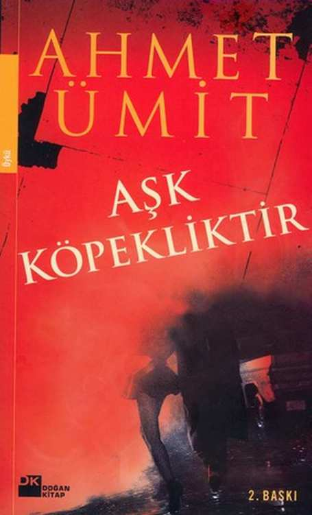

Ahmet Ümit
Aşk Köpekliktir
DOĞAN KĐTAP
Serpil'e, Serdar'a ve Gonca'ya, en derin sevgilerimle
Aşkı olan, arı namusu neyler Yunus Emre
Önsöz yerine
Yada
Aşk Rüzgârın Söylediği Bir Şarkıdır
Rüzgâr, sonbaharda hep aynı şarkıyı söyler.
Pencerenin camlarında gezinen titreyiş,
kasımpatıların gövdelerini okşayan fısıltı, karanlıkta
gümüşî yaralar açan çığlık, yağmuru hızlandıran deli
ıslık, yüzümüzde patlayan haykırış, denizi ürperten
mırıltı, kaç renk, kaç çeşit, kaç ton sesi varsa, rüzgâr
sonbaharda hep aynı şarkıyı söyler.
Buna şarkı demek de doğru değildir; çoğu zaman bir
ağıttır. Güzelin kısacık ömrüne, gidenin çekiciliğine,
sevgilinin hayaline yakılmış bir ağıt. Her yıl
tekrarlanmasına rağmen yıpranmamış, dipdiri kalmış,
hüznünü zerrece yitirmemiş bir ağıt...
Aslında hikâyenin başlangıcı sonbahar değil,
bahardır. Bulutlar yükselip, güneş cömertleşince,
tomurcuklar belirginleşip, yapraklar seçilince rüzgâr
âşık olur. Birden değil, sanki çok eski, çok derin, hep
var olan bir şeyi anımsar gibi ağır ağır âşık olur,
usulca, sindire sindire. Tanıdık, bildik, hep gözünün
önünde olanın kadim güzelliğini yeniden keşfeder gibi.
Hayır, rüzgâr hemen şarkıya başlamaz, sadece âşık
olur. Belki size şaşırtıcı gelecek, rüzgâr çiçeklere
değil, yapraklara âşık olur. Evet, ağaçları güzel kılan,
kuru dallan yeşile çevirip, güneşte gümüşbalıkları gibi
kımıl kımıl kıpırdanan yapraklara... Çiçekler mi?
Nedendir bilinmez, rüzgâr, çiçekleri yaşamı boğacak
kadar süslü ve züppe bulur. Biz insanların hayranlıkla
baktığımız, kokladığınız, sevdiklerimize en değerli
armağanlar olarak götürdüğümüz çiçekler onu
çekmez, cezbetmez. Onlara dokunmayı, onlarla
sevişmeyi doyurucu bulmaz. Rüzgâr olmanın verdiği
bilgelikle kavramıştır bunu. Belki de yaprakların engin
gönüllülüğü çeker onu... Neyse işte, rüzgâr yapraklan
sever. Dünya kurulalı beri bu sevdadan
vazgeçmediğine göre de çektikleri ona yetmemiş, bu
aşk onu doyurmamıştır. Bu her zaman dile getirilmese
de böyle bilinir, böyle kabul edilir.
Gelmiş geçmiş bahar yağmurları, yaz sıcakları bu
sevdanın tanığıdır. Rüzgârın sevgisini göstermesi için
yapraklara ihtiyacı vardır... Sadece sevgisini
göstermek için mi? Şiddetini, acımasızlığını, öfkesini
göstermek için de... Zavallı yapraklar bu delişmen
âşığın her halini, hiç seslerini çıkarmadan, vefakâr bir
sevgili gibi çeker.
Hayır, rüzgârın dilinde her mevsim aynı şarkı yoktur.
Baharda umutlu bir âşık gibi bağıra çağıra dolaşır,
yaza doğru uzun sevişmelerin yorgunluğu belirmeye
başlar, büyülü bir doygunluk sarar bedenini; tatlı bir
sarhoş mırıltısıyla sürüklenir kentlerin sokaklarında,
bozkırın ıssızlığında, dağların koyaklarında, denizlerin
maviliğinde... Derken bir sabah soğuğu hisseder.
Gerçek, sulusepken bir yağmurla büyülü rüyasından
uyandırır onu. Birden olacakları anlar; eli ayağı
tutulur, ne yapacağını bilemez...
Olan olmuştur işte; güneş çekilmiş, karnı kara bulutlar
kötü olayların habercisi gibi çökmüştür toprağın
üzerine. Her sonbahar yaşanan yeniden yaşanacaktır.
Rüzgâr, belki de farkına varmadan başlar hüzünlü
ezgisine. Önce belli belirsiz, adeta fısıldar gibi, sonra
iç çekerek, sonra öfkelenerek, en son da haykırarak
söyler şarkısını.
Yapraklar, rüzgârın ezgisini duymadan dökülmezler;
hava ne kadar soğuk olursa olsun, yağmur ne kadar
şiddetli yağarsa yağsın, onların tutundukları dallardan
kopmaları için rüzgârın şarkısını duymaları gerekir.
Tuhaf bir paradokstur yaşanan. Rüzgâr, yaprakların
döküleceğini bildiği için şarkısına başlamıştır.
Yapraklarsa döküleceklerinden habersiz, rüzgârın
ağıda benzer şarkısını duyunca, dayanamayıp
bırakmışlardır kendilerim aşağıya.
Rüzgâr elinden gelse, tükürüp atacaktır dilinden bu
acı şarkıyı, çekip gidecektir buralardan. Ama bunu,
bugüne kadar başaramamıştır. Bundan sonra
başaracağı da kuşkuludur.
Bir an, sadece bir an umutlanır rüzgâr. Ağıdı bırakır,
damarlarında gizlenen çürümeye rağmen güzelliğini
koruyan yerdeki yaprakları canlandırmak ister. Bütün
bedeniyle dokunur onlara; bu dokunuş öyle yumuşak,
öyle kırık dökük, öyle çaresizdir ki, ağaçlarda kalan
yaprakların da aklını çeler, onlar da kaldırıp atarlar
kendilerini rüzgârın kollarına. Artık nemli toprağın
üzerinde ölümcül bir dans başlamıştır. Tan
doğumundan öğle ortasına, ikindiden akşam
alacasına, gece karanlığına, son yaprak dökülünceye
kadar sürecek bir dans.
Düşen mutlu düşer, ne de olsa son nefesini sevdiğinin
kollarında vermiştir. Yaşayana ise çıldırmak kalır.
Yapraklarını koruyamadıkları için ağaçlan kökünden
söker, duyarsız sokaklarda naralar atarak dev
binalara saldırır. Takati tükeninceye kadar kendini
granit dağlara, buzdan denizlere, sisli ovalara, derin
göllere çarpar. Sonra... Sonra birden rüzgârın içi
boşalır, soluğu kesilir, gökyüzü ile toprağın arasında
öylece durur. Ne yapraklara dokunacak gücü kalır, ne
şarkısını sürdürecek inadı. Rüzgâr, tıpkı bir insan gibi
aniden oluverir.
Aşk Bir Mucizedir
O hep akşamüstü gelirdi. Güneş batmamışken,
sokaklar kül rengi bir ışıkla yıkanmamış, odamın
ışıkları henüz yanmamışken. Büromun önündeki, iki
yanı fundalıklı dar yoldan geçerek aşağıdaki işlek
caddeye yürürdü. Ben, pencerenin önünde durur,
perdenin arasından, soluğumu tutarak izlerdim
yürüyüşünü. Her akşamüstü... Gerekirse en önemli
görüşmelerimi bile iptal ederek...
Bu halime bakıp romantik biri olduğumu sanmayın.
Đlgisi yok, son derece mantıklı, duygularından çok
düşünceleriyle hareket eden bir adamım. Hatta lise
yıllarında birçok arkadaşım, kendilerini aşkın hülyalı
dünyasına kaptırıp, sevgilileriyle buluşmak için okulu
kırarken, ben bir gün bile devamsızlık etmeden,
sayfası sayfasına derslerimi takip ederdim. O dönem
platonik aşklar yaşadığımı inkâr edecek değilim, ama
kendimi hiçbir zaman bu türden havaîliklere
kaptırmadım, sorumluluklarımı hiç aksatmadım.
Kazandığım ne varsa kendi aklımla, kendi emeğimle
oluşturduğumu söyleyebilirim. Şirketimin başarısını,
evliliğimin bunca yıldır sürüyor olmasını da akılcı
davranışlarıma borçluyum. Evliliğimizin, karşılıklı
saygı ve sevgiye dayalı, dengeli bir ilişki olmasında,
kuşkusuz eşimin rolü de var. Onun anlayışlı bir insan
olmasını, bana karşı ilgisini hiç yitirmeyişini,
çocuğumuza karşı sorumluluklarını büyük bir istekle
yerine getirmesini takdir etmiyor değilim. Ancak
birlikteliğimizin bu denli uzun ömürlü olmasında daha
çok benim inceden inceye mantık süzgecinden
geçirilmiş davranışlarımın belirleyici olduğunu da
söylemeden geçemeyeceğim. Böbürleniyormuşum
gibi gelebilir, ama inanın öyle. Daha doğrusu öyleydi.
Bir zamanlar böyle davranmış olmakla gurur
duyardım... Bir zamanlar... Şimdi o günleri özlüyorum.
Aklımın gündüzleri işimle, geceleri eşim ve oğlumla
dolu olduğu sıradan, basit, huzurlu günleri. Ne yazık
ki o huzur dolu, sakin günler çok gerilerde kaldı. Onu
gördüğüm andan itibaren yaşamım altüst oldu. Hem
de ne altüst oluş. Bu öyle bir şey ki... Nasıl anlatsam!..
Bu, birbirine benzeyen günlerin içinden ansızın
çıkıveren bir rüzgârın her şeyi değiştireceğine
inanmak gibi; bu, yağmurun yumuşak yeşilini,
çiçeklerin kırılganlığını, baharın kışkırtıcılığını yeniden
hissetmek gibi... Yani anlatmak zor, ama yeniden
gençleşmek, bir daha yaşayamam diye düşündüğün
duygulanıl birdenbire uyanıp, seni ayağa kaldırması
gibi... Bakın, şiir yazar gibi anlatıyorum. Bir mantık
abidesi olan ben, bu yaşımdan sonra
romantikleşmeye çalışıyorum. Biliyorum, komik
oluyorum ama içimden böyle yapmak geliyor.
Oysa onu ilk fark ettiğim gün, aklım oğlumun yabancı
dil öğrenme işiyle meşguldü. Bir baba olarak oğlumun
en iyi eğitimi almasını istiyordum. Çok zengin biri
sayılmam ama halimiz vaktimiz yerinde çok şükür.
Galiba en iyisi özel okullardan birine yazdırmaktı
çocuğu. Gerçi bazı arkadaşlarım, bu okulların birer
para tuzağı olduğunu, kaliteli eğitim veren Anadolu
liselerinden birini tercih etmemin daha doğru olacağını
söylüyorlardı ama... Başka seçenek de yok gibiydi.
Bunları düşünerek ofisimde geziniyordum ki, canım
sıkıldı, perdeyi aralayıp dışarıya bakmak istedim.
Baktığım anda da onu gördüm. Sırtında bej rengi bir
pardösü vardı, omuzlarına düşen açık kumral saçları
rüzgârda belli belirsiz kıpırdanıyordu. Önümden hızla
akıp gitti. Onu görür görmez bir yerlerden daha önce
tanıştığımızı anladım. Oysa kısa bir süreliğine, üstelik
sadece arkadan görmüştüm. Hatırlamaya çalışarak
öylece baktım...
Yine de ilk görüşümde onu çok önemsediğimi
söyleyemem. Ama iki gün sonra aynı saatlerde yine
penceremin önünden geçince, ertesi gün de bunu
tekrarlayınca, onu daha yakından izlemeye başladım.
Omuzlarının hafifçe sarsılışı, saçlarının yumuşak
kumrallığı, pardösüsünün altında belli belirsiz devinen
kalçaları... Evet, onu daha önce görmüştüm, bundan
emindim. Ama ne zaman, nerede, çıkaramıyordum.
Dördüncü görüşümde anımsadım; inanılmaz şey, onu
düşümde görmüştüm.
Evet, onu yıllar önce düşümde görmüştüm.
Evleneceğim günden bir önceki geceydi. Belki de bu
yüzden hiç unutamamışım. Düşümde, dalgalı bir
denize bakan bir gül bahçesindeydim. Bahçe
dediğime bakıp da, içinde tek katlı evlerin yükseldiği
birkaç gül fidesiyle süslenen kıytırık yeşillikler
gelmesin gözünüzün önüne. Düşümde gördüğüm yer
adeta Babil'in Asma Bahçeleri gibiydi. Evet, evet
yanlış duymadınız, asma bahçe dedim. Rüyasını
gördüğüm o muhteşem arazi tam on iki asma
bahçeden oluşuyordu. Her bahçede farklı renkte
güller ekilmişti; beyaz, san, açık san, turuncu,
yavruağzı, pembe, kırmızı, mor, hatta siyah güller...
O, mor güllerin arasındaydı; ayakta durmuş, denize
bakıyordu. Uzun boyluydu, sırtında tıpkı ofisimin
önünden geçen kadınınki gibi bej rengi bir pardösü
vardı, açık kumral saçları omzuna dökülüyordu.
Sessizce ona yürüdüm. Yürümek değil de sanki
uçtum. Çünkü ayaklarım yere basmıyor gibiydi. Yine
de beni hissetmiş olmalı ki döndü. Yüzü ilgi
duyduğum, sevdiğim, âşık olduğum ve ömrümün geri
kalanında da ilgi duyacağım, seveceğim, âşık
olacağım kadınların yüzlerine benziyordu. Bu
benzerlik beni hiç şaşırtmadı. Biliyorum, gerçek
yaşamda böyle bir yüz göremezsiniz ama düşte her
şey olanaklıydı. Uğruna acı çektiğim, yalan
söylediğim, ihanet ettiğim, sırlarımı paylaştığım bütün
kadınların birleşiminden oluşan bir varlık duruyordu
karşımda. Yeşil, kahverengi, mavi, siyah, bal rengi
gözler şefkatle, kıskançlıkla, sevgiyle, düşmanlıkla,
aşkla bakıyordu bana. Tatlı bir baş dönmesi hissettim;
gözlerine biraz daha baksam düşecektim. Düşmemek
için bedenine futundum, dudakları dudaklarımın
hizasındaydı. Yan aralıktı, arasında durduğu güller
gibi mor renkli bir rujla boyanmıştı. Uzandım, gül
yapraklan gibi narin dudaklarına dudaklarımla
dokundum. Amansız bir gül kokusuyla sarmalandım.
Öpüşmenin tadını bilecek kadar çok kadınla
tanışmıştım; ince, dolgun dudaklılar, çilek ya da kara
üzüm renginde olanlar, ağzınızın içinde hoş bir koku
bırakanlar; sanki acıtmaktan korkarmışçasına
dokunanlar ve aklıma gelmeyen daha niceleri, ama
hiç duraksamadan söyleyebilirim ki, bu öpüşme o ana
kadar yaşadıklarımın hiçbirine benzemiyordu. Hemen
hınzırca gülümsemeyin; sözünü ettiğim baştan
çıkancı bir cinsel duygu değil. Bilinen anlamdaki
cinsellikten çok uzak bir şey. Dolgun, mor dudakları
ağzımın içinde yabanî bir dut gibi erimeye başlayıp da
bu sıvı kanıma kanşınca, ruhumun annmaya,
bedenimin yenilenmeye başladığını hissettim.
Yüklerimden kurtulmuş gibiydim. Aşağıda çılgınca
dalgalanan denizle, bu dingin bahçeyle, rengârenk
güllerle, kollanmın arasındaki kadınla
özdeşleşiyordum. Mutlak mutluluk, kesin huzur, saf
masumiyet, hem zevk, hem dinginlik hepsini aynı
anda hissedebiliyordum, inanın abartmıyorum,
yaşadığım, tanrılann insanlara vaat ettikleri türden bir
zevkti; bedenin doyumu ile ruhun doyumunun
buluştuğu an...
Ama düşlerin de yaşam gibi bir sonu vardı. En güzel
yerinde annemin sesiyle uyandım. Annemin sesi hiç
bu kadar çirkin gelmemişti bana. Ne diyorum farkında
mısınız ? Sevgili annemin sesini çirkin bulduğumu
söylüyorum. Yalnızca o gerçek olmayan, bir
yanılsamadan ibaret olan rüyamı böldüğü için.
Neyse... Annemin sesiyle uyandım. Şaşkınlıkla
gözlerimi açtım. Neler yitirdiğimin ayrımına varır
varmaz, yeniden kapadım. Boşuna... gözka-
paklanmın altında simsiyah boşluktan başka bir
görüntü yoktu. Başımı yastığın altına gömdüm, ne
çare ki o büyülü rüya geri dönmüyordu. Zaten baş
ucumda dikilen annemin de yeniden uyumama fırsat
vereceği yoktu.
Daha sonra sık sık bu düşü anımsadığım oldu; gül
bahçesindeki o kumral kadın gözümün önüne her
geldiğinde içimde taptaze, umut dolu bir şeyler
kıpırdıyordu. Ama yaşam belleğimizdeki anıları
silmekte çok ustaydı, giderek izler zayıflamaya
başladı, bu düşü daha az anımsar oldum. Ta ki
penceremin önünden geçen bu kadını görünceye
kadar.
Bu kadın, düşümdeki kadın mıydı? Olamayacağını
biliyordum, düşünmek bile saçmaydı, ama inanmak
güzeldi. Üstelik böyle düşünmeye ihtiyacım vardı.
Çünkü onu fark ettiğim andan beri yaşamım anlam
kazanmaya başlamıştı. Günlerim onu beklemenin
heyecanıyla geçiyordu. Onun geleceği saatlerde
sekreterime telefon bağlamamasını söylüyor, hatta
çoğu zaman, onu erkenden evine yolluyordum. Sonra
hazırlıklarımı yapıp, nefesimi tutarak onun
görünmesini bekliyordum. O fundalıklı yolda belirince
de, omuzlarına dökülen saçlarını, bedeninin hafifçe
sarsılışım, kendinden emin yürüyüşünü keyifle
izliyordum. Bir dakika bile sürmüyordu bu. Ama o
saniyelerin her biri benim için nasıl büyük bir
mutluluktu, nasıl büyük bir heyecandı anlatamam.
Ama gitgide bu saniyeler yetmemeye başladı. Onu
böyle uzaktan, üstelik yüzünü bile görmeden izlemek
artık acı veriyordu.
Onun yüzüne bakmalı, kokusunu duymalı, sesini
işitmeliydim. Bütün benliğimle bunu istiyordum, öte
yandan içimde bir korku taşımıyor da değildim. Ya
yüzünü gördüğümde, sesini duyduğumda, kokusunu
hissettiğimde onun düşlerimdeki kadın olmadığını
anlarsam!.. Bu korkunç bir yıkım olurdu benim için.
Şimdi, bir yanılsama da olsa, onu uzaktan izlemek
beni mutlu ediyordu. Ya gerçek bunu bozarsa? Ama
onu bu pencerenin arkasından seyretmek de
yetmiyordu işte. Kendi kendimle didişmelerle geçen
uzun günlerin ardından sonunda onunla konuşmaya
karar verdim. O gün sekreterimi, mesai bitiminden çok
önce yolladım. Kendime çekidüzen verdim.
Yapacağım konuşmayı defalarca aklımdan geçirdim.
Sonra pencerenin önüne geçerek heyecanla
beklemeye başladım. Sonunda fundalıklı yolda
göründü. Onu görür görmez elim ayağım titremeye
başladı. O gün her zamankinden daha çok
heyecanlanmıştım. Bir an vazgeçmeyi bile düşündüm.
Ama sonra bunun doğru olmadığına karar vererek
dışarı çıktım. Heyecanımı denetlemeye çalışarak
yaklaştım. Birkaç adım sonra omuzlarımız aynı hizaya
gelmişti. Biraz daha yan yana yürürsek onu ürkütebi-
lirdim. Sesimi olabildiğince yumuşatarak,
"Affedersiniz" dedim.
O bana doğru dönerken boğazım kurumuş, bedenim
rüzgâra tutulmuş bir yaprak gibi sallanıyordu.
Gerçekten de düşümdeki kadın mı çıkacaktı karşıma?
Döndü. Hayır, düşümdeki gibi değildi, bu kadının bir
yüzü vardı. Hem de çok güzel bir yüzü. Ela gözleri
tuhaf bir ışıltıyla yanıyor, insana cesaret veren ılık bir
gülümseyiş dudaklarını süslüyordu. "Affedersiniz" diye tekrarladım.
"Buyurun" dedi. Etrafa şöyle bir baktıktan sonra bana döndü. "Bana mı seslendiniz ?" Gözleri soru doluydu.
"Evet... Şey... "
Bir türlü konuşmaya başlayamıyordum. "Buyrun, sizi
dinliyorum."
"Lütfen beni yanlış anlamayın... Sizi rahatsız etmek
istemiyorum..." Yine sustum, lafın arkasını nasıl
getireceğimi bilemiyordum. "Eee, rahatsız etmek
istemiyorsunuz... " diye cesaretlendirdi beni... "Yani yanlış anlamanızdan korkuyorum... "
"Yanlış anlamamdan... " diye yineledi. Halim çok
komik olmalı ki, yüzünde neşeli bir ifade belirmişti.
"Yani böyle sokak ortasında sizi durdurup... "
"Bakın beyefendi" dedi sakin bir tavırla. "Biraz sakin olun... Gören de sizi büyük bir suç işliyor sanacak... "
"Suç mu ? Yok yok, aklınıza kötü şeyler getirmeyin.
Size zarar verecek değilim."
Tepeden tırnağa süzdü beni.
"Öyle düşünmüyorum zaten."
"Yani yanınıza böyle birden gelince... "
Gözlerinde kendinden emin bir ifade belirdi.
"Rahat olun beyefendi, hangi çağda yaşıyoruz.
Tanışmıyor olabiliriz, ama bir söyleyeceğiniz varsa,
sizi dinlerim."
"Ne kadar anlayışlısınız" dedim. "Evet, size bir şeyler söylemek istiyorum. Mümkünse tabiî... " "Neden
olmasın ?" Duraksadı. "Ama ne konuşacağız ?"
"Biraz uzun bir hikâye... Böyle ayaküstü olmaz."
Elimle ofisimi gösterdim. "Ben şurada çalışıyorum, bir
sakıncası yoksa, buyrun orada konuşalım."
Gösterdiğim yere baktı.
"Büronuzda ha! " Yüzünde tuhaf bir ifade belirmişti.
Kabul etmeyecek diye korktum, ama kibarca başını
salladı. "Hay hay..." Birlikte yürümeye başladık.
"Bu kadar heyecanlı olduğunuza göre anlatacaklarınız
çok ilginç olmalı..." diyerek ağzımı yokladı.
"Gerçekten de çok ilginç. Duyunca siz de bana hak
vereceksiniz."
"Çok merak ettim şimdi. Benim hakkımda mı?"
"Sizin hakkınızda" dedim. Utana sıkıla ekledim. "Tabiî benim de."
Dudaklarında çapkın bir ifade belirdi.
"Haliyle, siz olmadan olmaz."
Sesi manidardı. Benimle alay edecek diye korkmaya
başladım ama ok yaydan çıkmıştı bir kere, gittiği yere
kadar sürdürecektim. Ancak büroya gidinceye kadar
soru sormadı. Ben de cesaret edip onunla
konuşamadım. Büronun kapısına gelince, yine o
bozdu sessizüği, "Tamdık geliyorsunuz" dedi. "Daha önce karşılaşmış mıydık?"
Az kalsın düşümde diyecektim, "Ben de sizinle bunu
konuşmak istiyordum" dedim. Kadının yüzünde şaşkın
bir ifade belirdi. Yeni bir soru sormasına olanak
tanımayarak, kapıyı açıp onu içeri buyur ettim.
Güvenli adımlarla girdi dairenin kapısından, hiç
yabancılık çekmeden antreden geçerek, çalışma
odama yürüdü. Sanki buraya daha önce gelmiş
gibiydi. Odama girince, teklif etmemi bile beklemeden
pardösüsünü çıkardı. Üzerinde uçuk pembe, küçük
ama diri göğüslerinin yarısını açıkta bırakan, derin
dekolteli bir elbise vardı. Uçuk pembe elbisenin
üzerine dökülen kumral saçlarının rengi sarıya
yakındı. Elbisenin boyu pek uzun değildi, kadının
güneş yanığı dizlerinin on santim kadar üzerinde son
buluyordu. Onu böyle görünce ne yalan söyleyeyim,
heyecanım bir kat daha arttı. O ise rahat tavrını
sürdürerek, sanki onu daha iyi görmemi istiyormuş
gibi, tam karşıma geçip oturdu. Koltuğa oturunca,
elbisenin etekleri iyice yukarı çekildi, bacakları bütün
güzelliğiyle ortaya çıktı. Bacaklarına bakmamaya
çalışarak, "Size
ne ikram edebilirim ?" diye sordum. "Soğuk bir şey... "
"Meyveli gazoz?.. "
"Beyaz şarabı tercih ederdim" dedi.
"Şarap" dedim şaşkınlıkla. Allah'tan buzdolabında
aylardır bekleyen küçük bir şişe şarabım vardı. "Tabiî,
hemen."
Şarabı açıp, yanında iki bardakla getirdim.
Elimdekileri ortadaki sehpanın üzerine koyduktan
sonra karşısındaki koltuğa geçip oturdum. Đkimizin
kadehini de şarapla doldurdum, bu süre içinde hiçbir
şey sormadı. Dudaklarında içten bir gülümsemeyle
beni izlemekle yetindi. Sonra uzanıp kadehini aldı,
usulca benimkine dokundurdu.
"Sağlığınıza... "
"Sağlığınıza" dedim.
Kadehini önündeki sehpanın üzerine koyduktan sonra
sordu:
"Eee anlatın bakalım, neymiş benimle konuşacağınız
konu? Çok merak ediyorum."
Ben kadehimi hâlâ elimde tutuyordum.
"Söze nasıl başlayacağımı bilmiyorum" dedim. "Belki de bana inanmayacaksınız, belki sizinle konuşma
fırsatı yaratmak için yalan söylediğimi sanacaksınız."
Ela gözlerinden çapkm bir ifade geçti.
"Benimle konuşma fırsatı yaratmak için yalan söyler
misiniz ?" diye sordu.
"Aslına bakarsanız, ne yalan söyleyebilirim ne de
sokakta kadınları çevirip konuşmaya çalışırım. Bunlar,
pek benim yapabileceğim türden işler değil." Kadehimi
masanın üzerine koyduktan sonra sürdürdüm
sözlerimi. "Biraz çekingenimdir aslında... " "Ama bana karşı pek çekingen davranmadınız."
"Davranmadım. Ama sizinle konuşmak için günlerce
kendimle mücadele ettiğimi bilmenizi isterim. Sizi ilk
gördüğüm günden beri, yanınıza gelmek konusunda
kendimle didişip duruyorum." "Beni ilk nerede
gördünüz ?"
"Burada" dedim elimle pencerenin dışını göstererek,
"ofisimin önünde, siz fundalıklı yoldan geçerken... "
Dalgm mırıldandı.
"Evet, bu yolda yürümeyi seviyorum." Dalgınlığından kurtulup bana döndü. Sanki kızacakmış gibi kaşlarını
çatmıştı, ama bakışlarında hiç öfke yoktu.
"Yani günlerce beni izlediniz... " diye söylendi. "Özür dilerim, izlemek değil de... Gayriihtiyarî gördüm,
pencereden bakarken... Görünce de... " "Görünce de
izlemeye başladınız." "Evet ama düşündüğünüz gibi
değil." Anlamamıştı, soru dolu bakışlarını yüzüme
dikti. "Aslında, bu sizi ilk görüşüm değildi. Sizi daha
önce de görmüştüm... "
"Öyle mi? Nerede?"
Sorusunu yanıtlamadan önce derin bir nefes aldım.
"Düşümde." "Ne?" "Lütfen beni delinin biri sanmayın.
Sizi gerçekten de düşümde gördüm."
Şaşkınlığını sandığımdan daha çabuk atlattı.
Vişneçürüğü rujla boyanmış dudaklarında muzip bir
gülümseme belirdi.
"Peki ne yapıyordum düşünüzde ?" diye sordu. Sesi
çapkınca çınladı ofisimin ağırbaşlı duvarlarında. Olanı
biteni büyük bir istekle, bütün ayrıntılarıyla anlattım.
Hiç sesini çıkarmadan, tek bir soru bile sormadan
dinledi beni. Sözlerim bitince gülümsedi: "Boşuna
değilmiş size aşina olmam. Demek ki ben de sizi o
düşten hatırlıyorum."
Şaşkınlık sırası bana gelmişti. "Nasıl yani? Siz de mi
aynı düşü gördünüz?" "Neden olmasın ?" Ağzım açık kalmıştı. "Ama... Ama bu bir mucize." "Mucizelere inanmaz mısınız ?" "Bilmem... Hiç düşünmedim. Daha
önce başıma hiç böyle bir mucize gelmemişti."
"Normal" dedi. "Çünkü daha önce bana
rastlamadınız." "Anlayamadım" diye mırıldandım.
"Anlayamayacak ne var canım. Görmüyor musunuz
benim işim mucizeleri gerçekleştirmek." Alık alık
baktığımı görünce, yapmacık bir düş kırıklığı içinde
dudak büktü. "Yoksa bana inanmıyor musunuz ?"
"Bilmiyorum" dedim çaresizlik içinde. "Size inanmayı çok istiyorum. Ama benimle alay ediyorsunuz diye
korkuyorum." Cesur bir ifade belirdi yüzünde. "Bunu anlamanızın bir tek yolu var."
"Nedir?" dedim.
"Öpüşmemiz" dedi. Duyduğuma inanamadım.
"Anlamadım!"
"Oysa çok basit. Düşünüzde öpüşmüyor muyduk?
Yeniden öpüştüğümüzde düşlerinizdeki kadının sizde
bıraktığı o muhteşem etkiyi hissederseniz, o kadın
olduğumu anlarsınız." "Đyi ama, nasıl olur?" diyecek oldum.
Hiçbir şey söylemeden ayağa kalktı, bana yaklaştı.
Ellerimden tutup beni de ayağa kaldırdı. Diliyle
dudaklarını ıslattığını gördüm. Gözlerindeki arzu öyle
güçlüydü ki, böyle bir öpüşmeye hazır olmadığım
halde hayır diyemedim. Đyice yaklaştı, parfümünün
kokusunu duyuyordum, gül kokusu değil diye
düşünürken, dudaklarını dudaklarıma bastırdı. Çok
heyecanlanmıştım, bu öpüşmenin düşümdekine
benzeyip benzemediğine bile karar veremi-yordum.
Zaten bunun pek önemi de kalmamıştı. Kadın
bedenini bedenime iyice yasladı. Đş öpüşmeden çıkıp
ön sevişme halini almıştı. Elini cinsel organıma
kaydırdığını hissettim. Đrkilir gibi oldum, kendimi geri
çekmeyi düşündüm. Ama kurtuluş yoktu. Sağ elimi
yakalayıp elbisesinin altına soktu. Elim çıplak tenine
dokundu. Sıcacıktı, diriydi, istek doluydu. Artık bu
sevişmenin sonuna kadar gideceğini anlamıştım.
Olacakları kabullenip, kendimi sevişmenin uyumuna
bıraktım.
Müthişti. Bedeninde gezinen ellerimin yer
değiştirmesinden soluk alıp verişime kadar en küçük
bir hareketimin bile dilinden anlıyor, istediklerimi
anında yerine getiriyordu. Ben biraz hızlanınca,
"Henüz değil, biraz bekle" diyerek oyunu uzatıyordu.
Ya da beni hırslandırmak için, "Evet evet, daha sert,
daha derine" diye soluyordu.
Bu kadar kısa sürede, böyle mahrem bir alanda, beni
bu kadar iyi anlaması, yönlendirmesi gerçekten
mucizeydi. Sonunda yaşamımı değiştirecek kadını
bulmuştum. Peki şimdi ne yapacaktım? Mutlu bir
evliliğim, daha doğrusu mutlu olduğunu sandığım bir
evliliğim vardı. Boşansam, o kadar kolay değildi. Hem
bakalım, bu mucize sevgili benimle evlenmeyi
isteyecek miydi ? Sevişme sonrasında bütün bunlar
hızla kafamdan geçti.
Elbiselerini giymiş, doygun ama tatlı gözlerle bana
bakıyordu.
"Mucizenizi gerçekleştirdim mi ?" diye sordu.
"Evet" dedim. "Haklıymışsınız. Siz gerçekten de düşlerimdeki kadınmışsınız." "Söylemiştim."
Yavaşça kalktı, pardösüsüne baktı. "Gidiyor
musunuz?" dedim korkuyla.
"Biraz daha kalırsam mucize bozulabilir" diyerek
pardösüsünü geçirdi sırtına. "Sizi bir daha
göremeyecek miyim?"
"Neden göremeyecekmişsiniz ?" dedi pardösüsünün
düğmelerini iliklerken. "Yakında buradan taşınıyorum,
ama yine Sadri'yi arayarak bana ulaşabilirsiniz."
Kafam karışmıştı; bahsettiği adamı tanımıyordum.
"Sadrimi?Odakim?"
Kadmın gözlerindeki masum ifade birden değişti.
"Sadriii" dedi, "bizim Sadri."
"Bizim Sadri mi? Bir yanlışlık olmalı... " Gözlerini kısarak, meydan okurcasına baktı.
"Bakın düşlerdeki kadm fantezisini filan anlıyorum.
Ama işi tadında bırakalım. Artık gerçeğe dönme
zamanı."
"Ne... Ne diyorsunuz gerçekten anlamıyorum." Hiç
beklemediğim bir davranışta bulundu.
"Bana bak lan" diye gürledi. "Senin kim olduğunu bilmiyorum ama eğer paramın üzerine yatacağını
sanıyorsan, aldanıyorsun." "Ne parası?" diye
kekeledim şaşkınlıkla.
Bir panter gibi hırsla üzerime atladı. Yakamdan tutup
sarsmaya başladı.
"Ağzına sıçarım ulan senin! Sikerken hevesliydin de,
iş parayı vermeye gelince mi çekingen oldun."
"Lütfen... Lütfen... " diye mırıldandım.
"Ne lütfeni lan? Bomontili Neşe'nin parasını kimse
yiyemez."
"Lütfen yakamı bırakın öyle konuşalım" dedim, "inanın ne demek istediğinizi anlamıyorum." Yakamı
bırakmadı, ama meramını kendi üslubuyla açıkladı:
"Anlamayacak bir şey yok. Vizite ücretimi istiyorum.
Yani 100 doları. 100 dolardan bir kuruş aşağı olmaz."
Başımdan aşağı kaynar sular dökülmüş gibi oldu.
Sonunda gerçeği anlamıştım. Bir an ne yapacağımı
bilemedim. Gülsem mi, ağ-lasam mı ? Ama kadın
artık sabrının sonuna gelmişti.
"Hadi" dedi yakamı çekiştirerek, "geceyansına kadar bekleyecek halim yok. Sökül paralan."
"Tamam tamam" dedim. "Özür dilerim, hemen
veriyorum."
Böyle söyleyince bıraktı yakamı. Ama bırakırken
uyarmayı da ihmal etmedi.
"Bir katakulli filan yaparsan..."
"Yok yok, o dediğinden yapmayacağım" diyerek
kasayı açtım. 100 dolar tutarındaki parayı ona
uzattım. Birdenbire yumuşamam kadını şaşırtmıştı.
Parayı alırken düşünceli bir ifadeyle yüzüme baktı.
"Yoksa doğru mu söylüyorsun ? Sen, Sadri'nin
bulduğu müşteri değil misin ?" Artık diretmenin bir
anlamı yoktu.
"Tabiî ki o müşteriyim" dedim bozuntuya vermeden.
"Sadece biraz şaka yapmak istemiştim." "Yapma, para konusunda kimseyle şaka yapma. Ters birine
düşersin, hacamat eder adamı." "Olur yapmam"
dedim.
Kapıdan çıkmadan önce döndü. Dudaklanndaki
çapkın gülümseme yeniden belirmişti. "Yine de
sevdim seni" dedi. "Matrak adamsın. Ne zaman canın
isterse Sadri'yi ara." "Ararım" dedim.
Çıktı. Ben de odama döndüm, pencereden baktım;
düşlerimde-ki kadın caddeye doğru yürüyordu.
Gözden yitene kadar onu izledim. Kâfi Delildir Aşk!
Ankara'dan ayrılırken yanımdaki koltuk hâlâ boştu. Bu
durumdan memnun olmadığımı söyleyemeyeceğim.
Siz de hak verirsiniz ki tanımadığınız biriyle yan yana
oturarak saatlerce yolculuk yapmak pek hoş bir durum
değildir. Ancak keyfim uzun sürmedi. Otobüsümüz
Gölbaşı'na gelince durdu. Bizim boş koltuğun sahibi
de ortaya çıkıverdi. Oldukça yaşlı biriydi. Otobüse
binerken gençten bir adam ona yardım ediyordu.
Koridorda ilerleyerek bana yaklaştı. Yanındaki adamın
işaretiyle, yaşlı adama yol verdim, o da pencere
kenarındaki koltuğuna kendini bırakıverdi. Genç
adam, "Hoşça kal dede" dedi. Sonra kulağıma
eğilerek, "Biraz rahatsız, ona yardımcı olur musunuz
?" diye rica etti.
Yanıma oturup keyfimi kaçırması bir yana, bir de
adama dadılık edecektik demek. Ama genç adam o
kadar nazik bir tavırla konuşmuştu ki, onu kıramadım.
"Tamam, merak etmeyin, ben ona göz kulak olurum"
demek zorunda kaldım.
Otobüsümüz yeniden yola koyulunca, yaşlı adam
bana bir selam bile vermeden, dışarıda akıp giden
bozkırı izlemeye başladı. Artık benimle hiç konuşmaz
diye içten içe sevinirken, sanki varlığımı yeni fark
etmiş gibi dönüp yüzüme baktı. Dudaklarıma zoraki
bir gülümseme yerleştirip, "Merhaba" dedim.
"Merhaba" dedi titrek bir sesle. Gözleri yüzüme takılıp kalmıştı, artık susmak olmazdı.
"Yolculuk nereye dede ?" dedim.
"Antep'e."
Đlgimi çeken ilk şey yüzündeki keder oldu. Ağarmış
saçları, alnındaki derin çizgiler, feri kaçmış kül rengi
gözleri, sanki yaşlanmanın doğal bir sonucu değil de,
yaşadığı korkunç bir olayın silinmeyen izleri gibi
yerleşmişti yüzüne. "Antepli misiniz ?" diye sordum.
"Evet, ya sen?"
"Ben de Antepliyim. Ama dışarıda üniversitede
okuyorum." "Talebesin yani... " "Evet, öğrenciyim... "
"Niye gidiyorsun Antep'e ?"
Savcı gibi böyle sorular sorması canımı sıkmaya
başlamıştı, ama ayıp olmasın diye yanıtladım.
"Yeğenimin düğünü var da."
Kül rengi gözleri canlanır gibi oldu.
"Düğün ha!" diye mırıldandı. "Düğün yaptığınıza göre haliniz vaktiniz yerinde olmalı." "Abimin durumu fena değildir" diye kestirip attım. Artık şu ahi-ret sorularını kesse de, yolda okumayı planladığım romanıma
dönsem diye düşünüyordum. Ama nerede, ihtiyar
hemen ikinci soruyu yetiştirdi. "Görücü usulü mü,
yoksa sevda mı?" "Görücü usulü" diyerek kestirip attım.
Konuşmak yerine, başını sallayarak, kendi kendine
gülümsedi. Galiba artık kurtuluyorum, diye
düşünürken, "Görücü usulüyle evlenmek iyidir" dedi.
"Sevda kötüdür. Arada sevda olsaydı üzülürdüm
yeğenine."
Yaşlı adamın, bıktıran sorularından sonra şimdi de
Kazanova misali kendinden emin bir tavırla, aşk
üzerine atıp tutması beni sinirlendirmeye başladı. "Bu
konuları çok iyi biliyorsunuz galiba?" diye alaycı bir
tavırla sordum. Alay ettiğimi anlamadı, gözlerine tatlı
bir özlem çöktü.
"Eh, biraz bilirim."
"Başınızdan epeyce macera geçmiş anlaşılan" dedim
alaycılığımı sürdürerek.
Yüzü ciddileşti. Alay ettiğimi anladı, şimdi bana
kızacak, diye düşündüm ama sandığım gibi olmadı.
"Bu işin macerası olmaz" dedi yaralı bir ses tonuyla.
"Hakiki sevda tektir. Sonuna kadar da tek kalır."
"Yapma be dede, insanın gönlü o kadar dar mı?"
"Đnsanın gönlü geniştir geniş olmasına ama sevda
kuşu da nazlıdır, öyle her önüne çıkan dala konmaz.
Her önüne çıkan dala konana bizde başka ad
verirler." Sürdürecek diye bekledim. Hayır, son
cümlesini söyleyip, başını çevirdi, yeniden dışarısını
izlemeye başladı. Az önce beni kendi halime
bırakması için neredeyse yalvaracakken, şimdi
konuşsun diye sabırsızlıkla bekliyordum. Öyle ya,
yeryüzünde kaç kişi çıkar da sevda kötüdür, derdi.
Sadece bu cümle bile merakımı uyandırmaya
yetmişti. Buna bir de, yüzündeki keder, sesindeki
eziklik eklenince bu ihtiyarın sıkı bir hikâyesi olduğuna
inanmaya başlamıştım. Ama gelin görün ki, bizim
ihtiyar sanki hiç konuşmamışız gibi beni unutmuş,
yanı başımızda akan dünyaya dalıp gitmişti.
Dayanamayıp sordum: "Dede bakar mısın ?"
Döndü, yorgun gözlerinde masum bir ifade vardı.
"Aklım takıldı, 'sevda kötüdür' dedin. Neden öyle
söyledin ?"
"Öyle olduğu için... "
Anlamadığımı fark edince gülümsedi.
"Sen hiç mapusa düştün mü?"
"Yoo düşmedim."
"Düşsen bilirdin... "
"Neyi bilirdim?"
"Đçerdeki gariplerin çoğunun bu sevda belasına
yattığım... " "Yapmayın, hiç öyle şey olur mu ?"
diyecek oldum.
"Olur ya. Bu memlekette kocası karısını kıskanır,
öldürür; oğlan sever, kızı başkasma verirler, öldürür;
baba, sevdiğine kaçan kızını orospu oldu diye öldürür;
kadın, başkasına dadandı diye kocasmı öldürür; abisi
erkeklerle konuşuyor diye kız kardeşini öldürür...
Daha söyleyeyim mi? Hepsinin sebebi sevda denen o
illettir."
Đnsanlar cahilse, kötüyse, bunda sevdanın ne suçu
var diyecektim, vazgeçtim. Niyetim onunla tartışmak
değil, öyküsünü öğrenmekti.
"Sevda hakkında çok kötü konuştun, herhalde sen hiç
sevdalanmadın?" diye sordum.
Tuhaf tuhaf yüzüme baktı, sonra derinden bir iç
geçirerek, "Olur mu evladım?" dedi. "Sevdalanmayan adam, adam mıdır?"
Evet, işte çözülmeye başlamıştı.
"Ama az önce sevda kötüdür diyordun, şimdi de
sevdaya düşmemiş adam, adam mıdır, diyorsun. Bu
nasıl iş, kusura bakma ama ben anlayamadım."
Haklılığından emin bir tavırla yanıtladı:
"Anlamayacak bir şey yok. Đkisi de doğru. Yaşın genç,
bilmiyorsun, insanoğlu yanlış işlerden keyif alır. Dört
kitabın dördünde birden niye cehennem var
zannediyorsun?"
"Niye?"
"Niye olacak? Đnsan denen yaratığı dizginlemek için.
Eğer Allah cehennemi yaratmamış olsaydı, vay
dünyanın haline... " Konudan uzaklaşmaya
başlamıştı. "Tamam doğru da, bunların sevdayla ilgisi
ne?"
"Đlgisi, insanoğlunun musibetliği. Đnsanoğlu o kadar
habis bir mahluktur ki o güzelim sevdayı da mundar
etmiştir... "
Sustu, gözlerinde koyu bir acı belirmişti. Belli ki
geçmişi anım-samıştı.
"Çok ağır konuştun be dede! Senin başından da epey
iş geçmiş anlaşılan."
Gözlerindeki acı yerini puslu bir parıltıya bıraktı.
"Geçmez mi? Yaş nerdeyse bir asra yaklaşıyor..."
"Eee anlatsan da dinlesek. Tabiî sakıncası yoksa... "
"Sakıncası yok da, anlattıklarıma inanmazsın... "
Merakım iyice depreşmişti.
"O ne biçim söz dede" dedim yaşlı adamı konuşmaya
ikna etmek için. "Đnanmayacak olsam, anlat der miyim
? Bizi o kadar ham biri zannetme... "
"Yok, estağfurullah, onu demek istemedim. Aile
terbiyesi almış bir çocuğa benziyorsun. Saygısızlık
etmezsin. Amma velakin benim anlatacaklarım öyle
herkesin başına gelen işlerden değil. Đnanmazsın, ters
bir laf eder, canımı sıkarsın. Yolumuz uzun An-tep'e
kadar küs oturmayalım."
Gözlerimin içine baka baka söylemişti kaygılarım.
"Bak şimdi ayıp ettin dede, niye canını sıkayım?
Yaşımız genç ama bizim de başımızdan az macera
geçmedi. Sana inanmayıp da kime inanacağım ?"
Israrım işe yaramış görünüyordu. Gözlerindeki kuşku
bulutları dağıldı, hatta gülümser gibi bile oldu.
"Madem öyle diyorsun, dinle o zaman" diyerek başladı öyküsüne.
"Đki çocuklu bir ailenin büyük oğluydum. Babam,
Antep'teki tarihî bedestende kuyumculuk yapardı. Ben
de yanında çalışırdım. Bu dediğim seksen sene
evveli. O zamanlar Antep bir kasaba gibi. Kasaba gibi
dediysem aklına küçük bir yer gelmesin, şimdiki gibi
olmasa da büyükçe bir yer. Ahalisi ise bir hayli karışık,
bir hayli renkli. Ermenisi, Rum'u, Musevîsi, Türk'ü,
Kürt'ü hepsi bir arada... Aynı mahallede, duvar aşırı
komşu olarak yaşıyorlar. Kilisesi, camisi, sinagogu bir
kuş ucumu kadar yakın birbirine. Çarşı pazar dersen
orası da aynı, üç dinin, bilmem kaç mezhebin
inananları bir arada pazar yapar, bir arada geçinir
giderlerdi.
Bizim yan komşumuz Musevî bir aileydi. Zahireci
Đshak Efendi. Đshak Amca'yla babam çocukluk
arkadaşıydı. Đshak Amca'nın Floris adında bir de kızı
vardı. Çocukluğum Floris'le birlikte geçti. Bazen
onların bahçelerinde, bazen bizim evin damında
oynardık. Floris küçükken de çok güzeldi; kınalı, kıvır
kıvır saçları, ışık saçan gözleri vardı. Arada bir
saçlarını çekip canını yaksam da aslında onu çok
severdim, onunla oynamak hoşuma giderdi. O da beni
severdi, yanımdan hiç ayrılmazdı. Ama Floris biraz
serpilince, annesi, birlikte oynamamıza izin
vermemeye başladı. Artık onu yalnızca pencere
kafeslerinin arkasından görebiliyordum. Birlikte
büyüdüğüm, birlikte oyunlar oynadığımız arkadaşım
bana yasaklanınca, ona duyduğum sevgi giderek bir
tutkuya dönüşmeye başladı. Ama elden ne gelir.
Aramızda duvarlar, pencereler hepsinden de önemlisi
komşuluk hatırı vardı. Eğer babam, Đshak Amca'nın
kızına böyle duygular beslediğimi bilse kemiklerimi
kırardı. Đşin daha ciddi olduğunu söylesem, onunla
evlenmek istediğimi açıklasam, bu kez de dinlerimiz
farklı, zinhar bu iş olmaz deyip kestirip atardı. Đlk
gençlik çağlarımız, böyle kaç göçle geçti. Floris'i
görmek için fırsatlar kollamakla, arada derede biri iki
gülüş koparmakla, birkaç laflık kaçamak
konuşmalarla...
Derken bizim askerlik de geldi çattı. Askerde Floris'in
yokluğunu daha çok hissetmeye başladım. O
zamanlar askerlik uzun, yıllarca sürüyor. Đnsanın
düşünmeye daha çok fırsatı oluyor. Düşündükçe,
Floris'e duyduğum sevdanın öyle kolay kolay bitecek
türden bir sevda olmadığım anladım. Anlamasına
anladım da o bir Musevî'ydi, ben ise Müslüman.
Bırakın evlenmeyi, birlikte görülmemiz bile normal
karşılanmazdı. Sadece bizimkiler değil, Đshak Amca
da bu işe asla olur vermezdi. Ben askerde böyle tasa
içinde kıvranırken kötü haber geldi. Floris kendisinden
yaşlı, kumaş tüccarı Yasef'le nikâhlanmıştı. Đshak
Amca'nın işleri kötü gitmiş, iflasın eşiğine gelmişti.
Floris'in yüklü bir drahoması yoktu. Yasef yaşlıydı,
ama zengindi. Floris'in nazını çeker, kıymetini bilirdi.
Haberi duyunca çok üzüldüm. Ama elden ne gelir.
Zaten Floris'le evlenmem bir hayaldi. Askerde onu
unutmaya karar verdim. Ama bunun boşuna olduğunu
da biliyordum. Fakat bu yalana ihtiyacım vardı. Yoksa
deli olacaktım.
Askerden dönüşümün üçüncü ayında babamı
kaybettim. Babam ölünce kuyumcu dükkânının basma
ben geçtim. Allah seni inandırsın evladım, eşek gibi
çalışıyorum. Evden işe, işten eve. Böyle böyle ikinci
dükkânı da açtım. Aslında paragöz biri değilimdir, bu
kadar çok çalışmamın asıl sebebi, tahmin
edebileceğin gibi Floris'i kafamdan atmaktı. Ama
kader bizim niyetlerimizi ne kadar umursar ki. Tersine
tekerleğimize çomak sokmak için çabalar durur. O
zaman da öyle oldu işte. Tam ben artık Floris'i
unutuyorum derken, bir gün sokakta yüz yüze geldik.
Sıcacık gülümsedi bana. Yüreğimi bir çarpıntıdır aldı.
Floris'e hiçbir şey söyleyemedim, gülümseyemedim
bile. Floris yağmur sonrası çıkan tatlı bir esinti gibi
geçti gitti yanımdan. Eski yaram yeniden depreşmişti.
Kederle girdim eve. Canım ne yemek istiyor ne içmek.
Ertesi gün zor kalktım yataktan, elim işe güce
varmıyor. Ama dükkâna gitmemek olmaz. Zorla da
olsa kalktım, bedestene gittim, dükkânı açtım,
çalışmaya başladım. Çalışıyorum ya, nasıl çalıştığımı
bir de bana sor. Ne yaptığımın, ne ettiğimin farkında
bile değilim. Öğleye doğru dükkânın kapısı açıldı. Hiç
müşteri çekecek halim yok. Memnuniyetsiz bir suratla
başımı kaldırdım. Baktım ki Floris karşımda. Menevişi
bol, ela gözleriyle beni süzmekte. Önce hayal sandım,
gözlerimi kırptım... Yok valla karşımdaki Floris'ti.
Elimdeki Sultan Reşat altınını masanın üzerine
bırakıp doğruldum. 'Hoş geldin' dedim. Dükkânın en
güzel, en rahat yerini gösterdim. 'Buyur, otur.' 'Sağol'
dedi. 'Bir bilezik yaptırmak istiyorum.'
Bilezik yaptıracağım diyor ama gözler başka bir şey
anlatıyor. Ben de seni hiç unutmadım, diyor. Sensiz
olmuyor, diyor. Bizi ayırdılar, bu zulme daha ne kadar
katlanacağız diyor. Gözler anlaşırsa, dil susar derler.
Ben de ne diyeceğimi bilemedim. Bir sevinç yalımı
kapladı yüreğimi. Floris bileziklere baktı, bir model
seçti.
'Bu güzelmiş' dedi.
Büeziğin bahane olduğunu biliyordum. 'Ben bundan
daha güzelini yaparım sana' dedim. 'Biliyorum,
yaparsın' dedi. 'Ne zaman hazır olur?' 'Bir hafta sonra'
dedim.
Birer altm damlasını andıran gözlerini yüzümden
almadan, 'Bir hafta sonra bileziği bizim eve getir' dedi.
Soluğum kesilir gibi oldu. 'Olur, getiririm' dedim.
Son bir kez baktı yüzüme; bir parça mahcup ama
özlemle. An-tep küçük yer, millet bu işi duyarsa ne
olur diye hiç umursamadan, gözlerimin önünde
Floris'in yüzü, kulaklarımda 'evime getir' lafı, gece
gündüz çalışarak beş günde bitirdim bileziği. Beş
günde
beş bin yıldır bu bölgede kuyumculuk adına neler
yapılmışsa, neler öğretilmişse hepsini kattım
işçiliğime. Đşinin erbabı bir kadın nakışçı, nasıl ipliği
ilmik ilmik dokuyarak çiçekler, güneşler, yıldızlar, aylar
yaratırsa ben de altını bir ipek gibi inceltip, bir ipek
gibi yumuşatıp, yeryüzünün en güzel bileziğini yaptım,
sevdiğim kadına. Bileziği tamamlayıp elime
aldığımda, güzelliğinden benim bile ağzım bir karış
açık kaldı. Bileziği gören kuyumcu esnafı başıma
toplandı.
'Böylesi Seba Melikesi Belkıs'ın hazinesinde bile
yoktur' diyerek gıpta ettiler.
Neyse evlat uzatmayalım, bileziği sedef bir kutuya
koyup, vardım kumaş tüccarı Yasefin evine. Bilezik
götürüyoruz ama yine de çekiniyor insan. Eve
girmeden, mahalleyi bir kolaçan ettim, baktım kimse
yok, çaldım kapıyı. Floris açtı. Yüzünde
çocukluğundan beri değişmeyen o tatlı gülümseyiş.
Đçeri aldı beni. Geniş taş bir bahçeden geçtik. Vakit
iğde zamanı, her yer mis gibi kokuyor. Arada kan
kırmızısı iri güller. Evde de başka kimse yok...
Sonra... Sonrasını tahmin edersin. Ateş bacayı
sarınca insan nerede duracağını bilemiyor. Başladık
mı biz Floris'le buluşmaya. Neredeyse haftada bir ben
Floris'teyim. Kocası kumaş tüccarı Ya-sef gün
doğarken evden çıkıyor, ardından haydi, ben
dalıyorum içeri. Güya kimseye görünmeden. Ama
nasıl görünmezsin, Museviler çalışkan millet, tıpkı
Yasef gibi sabah gün doğmadan herkes işinin başına
geçiyor. Đşe giden komşulardan biri görmüş bizi.
Dediğim gibi Antep küçük yer. Dedikodu da baldan
tatlı. Kısa sürede Yasefin kulağına gitmiş bizim sevda.
Yasef olgun adam. Karısı genç, güzel, kendisi yaşlı,
üstelik karısını sevmekte ki, deliler gibi. Bize bulaşsa,
bu memlekette azınlık. Ayıptır söylemesi biz de
delikanlılığımızın burcundayız. Burma bıyık, geniş
omuz, yürüdük mü sokaklar titriyor. Ne yapsın Yasef?
Oturup düşünmüş günler, geceler boyu. Anlamış ki,
en iyisi bu kentten kaçıp gitmek. Akşam Floris'e, 'Ben
bu kentten bıktım. Halep'te akrabalarım var, onların
yanına taşınalım. Hem Halep'te daha çok para
kazanırız. Sana daha güzel bir ev alırım' demiş.
Ertesi gün Floris telaş içinde benim dükkâna geldi.
Olanı biteni anlattı. Güzel gözlerini yalvarırcasına
yüzüme dikerek, 'Benimle evlen' dedi. 'Ben seni
seviyorum. Yasef i bırakıp burada kalayım. Bırakırım
her şeyi. Đstersen Müslüman da olurum... '
Evet demem için neredeyse elimi ayağımı öpecek. Ne
diyeceğimi bilemedim. Floris'le evlenmeye kalksam,
millet beni kınayacak. Müslüman olsa büe, kadın dul.
Anam başımın etini yer. Öte
yandan bıraksam Floris gidecek... Bir süre onunla
görüşmemeye karar verdim. Bir hafta sonra Floris
yine dükkâna geldi. Evlenme bahsini hiç açmadı,
sadece, 'Biz yakında gidiyoruz' dedi. 'Görüşe-mezsek
hakkını
helal et.'
'Helal olsun' dedim gözlerimi kaçırarak. Hayatımda hiç
bu kadar utanmamıştım. Delikanlı adamız, taşı sıksak
suyunu çıkarırız... Yumruksa yumruk, bıçaksa bıçak,
mahalle kavgalarında nam salmışız. Ama o gün
Floris'in önünde başımız eğik kaldık. Çünkü ne
yapacağımı bilemiyordum. Kendimden emin değildim,
duygularımdan emin değildim. Ama hayatın beni
beklemeye hiç niyeti yoktu. Yasef bir ay geçmeden,
karısını aldığı gibi tuttu Halep'in yolunu.
Đlişkimizi bilenler, 'Kurtuldun' dedi. Önce ben de böyle
düşündüm. 'Kurtuldum' dedim kendi kendime. Anam,
bana bir Türk kızı bulurdu, evlenir giderdim.
Yaşıtlarım nasıl ev, yuva kurdularsa, ben de öyle
yapardım. Kendimi işime, gücüme verdim, ilk iki hafta
böyle geçti. Đki haftanın sonunda bir gün Đshak
Amca'nın evinin önünden geçerken, pencereden biri
bana bakıyormuş gibi geldi. 'Floris' diye mırıldandım.
Yoksa Floris, kocasını bırakıp An-tep'e mi gelmişti ?
Kapıyı çalıp soramıyorum da. Akşamı zor ettim. Eğer
Floris baba evine geldiyse mutlaka anam bilirdi.
Güneş batar batmaz tuttum evin yolunu. Anam
mutfakta yemek pişiriyor. Hemen yanaştım yanına,
'Ya ana, bugün îshak Amcalardan çıkan bir kadın
gördüm. Floris sandım' diyecek oldum.
Anam ters ters baktı bana.
'Floris kocasının yanında' dedi. 'Artık el âlemin
namusuyla uğraşma... '
Anladım ki anam da öğrenmiş bizim meseleyi. Ama
umurumda değildi, demek Floris değilmiş diye
geçirdim içimden. Bunu söyler söylemez de bir ateş
düştü içime. O akşam bir meyhaneye gittim. Đçmeye
başladım. Hem içiyor hem de 'Ben ne bok yedim de
Floris'i bıraktım' diye dövünüyorum. Ama olan
olmuştu. Floris artık yoktu. Bana düşen de fikrimden,
yüreğimden onu çıkarmaktı. Söylemesi kolay, gel de
yap. Gün günden daha zor geliyor. Aklımı
kaçıracağım, her köşe basında, her kapının önünde
onu görüyorum, kulaklarımda hep onun sesi çınlıyor.
Anam durumun farkına varmış, beni bu kara
sevdadan kurtarmak için falcılara, cinci hocalara,
büyücülere gidiyor. Evin her köşesi; pencerenin
pervazı, kapınm arkası, yatağın altı muska doldu.
Tabiî hiçbir işe yaramıyor. Hocaların yazdıkları
olmayınca, bu kez de, 'Ben seni evlendireceğim' diye
tutturdu anam. Sanki kendi başımızı yaktığımız
yetmezmiş gibi bir de el kızının başını yakacağız.
Sonunda anamı karşıma alıp ciddi bir konuşma
yaptım. 'Ben kimseyle evlenmem, bu işi aklından
çıkar' dedim.
Ağladı, sızladı ama bana kız aramayı da bıraktı. Bana
gelince, Floris'siz yaşamaya ancak altı ay
dayanabildim. Anamın yalvarıp yakarmalarına
aldırmadan, iki dükkânı da küçük kardeşime teslim
edip, yanıma yüklüce bir para alarak düştüm Halep'in
yoluna.
Halep'te Yasef in dükkânını bulmak zor olmadı. Pazar
yerindeki en büyük dükkânlardan biri. Becerikli adam
Yasef, hemen tanınmış, esnafa sevdirmişti kendini.
Yasefi gizlice izleyerek evini öğrendim. Ertesi gün,
tıpkı bir zamanlar Antep'te yaptığım gibi sabah
erkenden evin önünde beklemeye başladım. Yasef
evden çıkınca, bir süre izledim onu. Evden iyice
uzaklaşınca, geri döndüm. Sokağı kolaçan ederek
kapıya yaklaşmaya başladım. Yirmi-otuz metre kala,
birden esmer bir delikanlı gördüm. Allah için kaş göz,
boy pos yakışıklı çocuk. O da benim gibi temkinli
gözlerle çevresini süzüyordu. Önce bir şey
anlamadım. Geçip gitmesi için yavaşladım. Ama
delikanlı gitmedi, Floris'in kapısına yöneldi. Belki de
Yasef in bir akrabasıydı. Bir şey söylemeye gelmişti,
kapıdan söyleyip gidecekti. Hemen soldaki ara
sokağa daldım, kendimi gizleyerek izlemeye
başladım. Delikanlı tıpkı, bir zamanlar benim Antep'te
Floris'e giderken yaptığım gibi, etrafı kolaçan ettikten
sonra kapıyı çaldı. Çok beklemedi, kapı açıldı.
Floris'in başı görünüp kayboldu. Delikanlı aralanan
kapıdan hızla içeriye süzüldü. Gözlerime
inanamadım. Bu delikanlı onun sevdalısı mıydı ?
Öylece kalakaldım. Sonra kendimi kandırmaya
çalıştım. Belki bir satıcıdır, mal satmaya gelmiştir,
diye düşündüm. Eğer öyleyse, hemen çıkardı. Ama
çıkmadı, tam iki saat içerde kaldı. Evden çıkıncaya
kadar orada bekledim.
O gidince bu kez ben yaklaştım eve. Çaldım kapıyı.
Floris açtı. Beni görünce şaşırdı, ama hiç sevinmişe
benzemiyordu. 'Niye geldin ?' diye sordu soğuk bir
tavırla. 'Biliyorsun neden geldiğimi' dedim üzüntüyle.
'Bilmiyorum, nereden bileyim' dedi.
'Seni unutamadım' dedim. 'Gelirsen Antep'e
götüreceğim. Seninle evleneceğim.' 'Çok geç' dedi
umursamaz bir tavırla, 'ben seni unuttum.' Sanki
başımdan aşağı kaynar sular dökülmüştü. 'Konuşalım'
dedim. 'Konuşacak bir şey yok' dedi.
Baktım ısrar etmek faydasız, baktım Floris çıkarmış
beni gönlünden, kaldığım hana geri döndüm. Sabaha
kadar düşündüm. Ona hak verdim. Ben çok geç
kalmıştım. Ortalık ışıyınca çıktım handan. Halep'te ne
kadar çiçekçi varsa hepsini dolaşıp, cebimdeki
paranın tümüyle çiçek aldım... Kırmızı güller,
karanfiller, laleler, aklına ne kadar kırmızı çiçek
geliyorsa... Yanımda çok para olduğunu söylemiştim.
Aldığım çiçekler, o kadar fazlaydı ki taşımak için üç at
arabası gerekti. Üç at ' arabası kırmızı çiçeği Floris'in
evinin önüne götürdüm. Çiçeklerin hepsini Floris'in
kapısına yıktım. Sokak kıpkırmızı oldu... Sokağın
kırmızısı duvarlara, pencerelerin camlarına, gelip
geçen insanların yüzüne vurdu... Sonra sevdiğim
kadım Halep'te öylece bırakıp Antep'e döndüm."
Öyküsünü bitiren yaşlı adamın gözleri dolmuştu.
Başını salladı. "Đşte böyle evlat" dedi. "Sevda kötüdür diyorsak, boşuna değil." Sadece yaşlı adamın gözleri
dolmamıştı, neredeyse ben de ağlayacaktım. Kendimi
toparladıktan sonra.
"Bravo dede" dedim heyecanla. "Çok güzel bir şey yapmışsın... Aşk zaten bir yere kadar. Sonuna kadar
sürmüyor. Ama sen çok güzel bitirmişsin... "
Yaşlı adam bana yanıt vermedi. Anlattığı hikâyeden
yorulmuş gibiydi, bakışları dışarıda akmakta olan
tarlalara takılmıştı yine. Ben ise yol arkadaşıma başka
gözlerle bakıyordum artık. Yolculuğun başında keşke
yanıma hiç oturmasa dediğim adam, benim için bir tür
Anadolu bilgesi olup çıkmıştı. Ama kendi dünyasına
öyle dalıp gitmişti ki, cesaret edip yeni sorular
soramıyor-dum. Otobüsümüz ilk molasını vermek
üzere bir dinlenme tesisinin önünde duruncaya kadar
ikimiz de sessiz kaldık. Aşağı inerken ona yardım
ettim. O tuvaletteyken, bizim otobüsümüzün muavini
yaklaştı yanıma. Dudaklarında pis bir gülümsemeyle
sordu: "Gene ne anlatıyor Vakkas Dede ?"
"Adı Vakkas mı ?" diye sorusuna soruyla karşılık
verdim. "Onu tanıyor musun ?"
"Tanımaz mıyım abi, onu Antep'teki bütün otobüs
şoförleri, muavinler tanır."
"Öyle mi ? Nereden tanıyorsunuz ?"
"Vakkas Dede biraz sıkıntılıdır. Takıntılı adam yani.
Memlekette en fazla bir ay kalabilir, sonra kendini
yolculuklara vurur." "Tuhaf' diye mırıldandım. "Neden böyle yapıyor?" "Abi, adamın başından çok iş
geçmiş..." Biliyorum diyecektim ki muavin fırsat
vermeden anlatmayı sürdürdü:
"Vakkas Dede, gençken bir Yahudi karısını sevmiş.
Kadın evliy-miş. Kocası durumu çakınca, Vakkas'tan
kurtulmak için evini Ha-lep'e taşımış. Bizimki bırakır
mı peşlerini. Hadi, o da Halep'e. Ama kadın yüz
vermemiş bizimkine. Vakkas Dede'nin gururu kırılmış
tabiî. Basmış kadının evini. Çektiği gibi kasaturasını,
kapının önünde hem kadını, hem kocasını delik deşik
etmiş. Vebali yalanı söyleyenin boynuna, sokak kızıla
kesmiş. Günlerce kandan annamamış sokak."
Öylece kalakalmıştım...
"Ya sonra?" dedim.
"Sonrası, kendi de iflah olmamış. Kadını gerçekten
seviyor-muş. Kafayı yemiş. Antep'te duramaz olmuş.
Kendinden mi, öldürdüğü kadının hayaletinden mi
bilinmez kaçmaya başlamış."
Muavine başka bir şey soramadım. Ne diyeceğimi
bilemiyordum. Az sonra dermansız ayaklarını
sürüyerek Vakkas Dede geldi yanıma. Ona da hiçbir
şey sormadım. Hiçbir şey olmamış gibi davranmaya
çalıştım. Açık bir çay ısmarladım.
"Sağolasın evlat" dedi.
Çayını içerken onu izledim. Bu yaşlı adamın hiç de
katile benzer bir yanı yoktu, ancak çok dikkatli
baktığınızda, sevdiği kadını öldürdükten sonra,
ellerinin kanını gözyaşlarıyla yıkamaya çalışan
çaresiz bir adamın ezikliğini görebilirdiniz onun
yıpranmış yüzünde.
Aşk Çözümsüz Bir Problemdir
Salona girdiğimde yemeğe başlamışlardı. Ellili
yaşlarını çoktan geride bırakmış arkadaşlarımı
rahatsız etmemek için herkesi kibarca selamlayıp,
uzun masada, sessizce yer aramaya başladım. Ama
yine de onların, "Geç kaldınız Raif Bey... Hanımdan
izin almak zor mu oluyor?.. " diyen sataşmalarından
kendimi kurtaramadım. Ben de onlara şaka yollu
takılıp çevreye bakınırken sonunda masadaki tek boş
iskemleyi gördüm. Konaktan bozma salonun ahşap
zeminini gıcırdatarak iskemleye yürüdüm. Gözlerim
bir an boş iskemlenin yanında oturan kişiye takıldı.
Duraksadım, yanılıyor muydum ? Yoo, bu gerçekten
de bizim Numan'dı. Yanında oturan, eski sıra
arkadaşı Erol'la keyifli bir sohbete tutuşmuştu.
Dikkatle inceledim, hayır yüzündeki neşe yapmacık
değildi. Gerçi sağ yanına inen felcin etkisi tümüyle
geçmiş değildi; gülerken yüzü biraz çarpılıyor, elini
rahatça kullanamıyordu, ama iki yıl önceye göre çok
daha iyi görünüyordu.
"Allah Allah ne olmuş bu adama" diye sevinçle
söylenmekten kendimi alamadım.
Karısı Müge, genç asistanıyla kaçtığından bu yana,
yani iki yıldır Numan bu yemekli toplantıların hiçbirine
katılmamıştı. Oysa on yıl önce, lisedeki sınıfımızın
tümü erkek olan mevcudunun bir araya toplanması
fikri ilk ondan gelmişti. Üstelik bu, düşüncede
kalmamış, Numan'ın o bitmek bilmez enerjisi
sayesinde üç ayda bir tekrarlanan yemekli toplantılara
dönüşmüştü.
Müthiş bir adamdı Numan. En basit olayları bile
sıradışı kılmasını bilir, gündelik yaşamın sıkıntılarını
kolayca birer keyif anına çevirirdi. Mesela çoğumuz
için geçiştirilmesi zorunlu olan yemek meselesi onun
için yaşamın en önemli etkinliğiydi. Şahane yemek
pişirirdi, hem de sadece Türk yemeklerini değil,
Endonezya'dan, Guatemala'ya kadar farklı kültürlerin
farklı yemeklerini yapar, sofrasma konuk olan herkese
hiç tatmadığı lezzetler sunardı. Đtiraf etmeliyim ki,
masa adabını çoğumuz ondan öğrenmi-şizdir.
Đstanbul'daki ünlü lokantaların, meyhanelerin hepsini
dolaşmıştı. Hangi mevsimde nerede, ne yeneceğini,
ne içileceğini ayrıntılarıyla bilirdi. Balık kadar, şarap
konusunda da uzmandı. Uzmanlığı sadece yeme
içmeyle sınırlı değildi. Çiçek konusunda da bir
botanikçi kadar olmasa da epeyce bilgi sahibiydi.
Evinin geniş salonu adeta bir kışlık bahçeyi
andırıyordu. Ama asıl uzmanlık alanı hiç kuşkusuz
kadınlardı. Yerli yabancı, benim diyen çapkını sulu
götürür, susuz getirirdi. Oysa hiç de yakışıklı bir erkek
sayılmazdı; kısa boyluydu, kiloluydu. Ama kendisine
çok iyi bakardı. Đyice kırlaşmış düz saçlarını her
zaman normalden biraz daha uzun bırakır, küçük
çenesini süsleyen kırçıl sakalına büyük özen
gösterirdi. Hafif ama etkili bir koku kullanırdı. Onun
aynı elbiseyi üst üste iki gün giydiğini hiç görmedim.
Ama bunlar, çoğu genç ve güzel olan pek çok kadını
cezbetmek için yeterli miydi ? Bilemiyorum; bildiğim
tek şey Numan'ın kadınlardan yana hep şanslı
olduğu, hiç sevgilisiz kalmadığıydı.
Bizler meslek yaşamına atıldıktan sonra birer ikişer
dünyaevi-ne girerken o evlenmedi, neredeyse yılda
bir sevgili değiştirerek uçan yaşamını sürdürdü. Ona
imrenmesem de kadınları nasıl etkilediğini merak
etmekten kendimi alamazdım. Yemekli
toplantılarımızın birinde dayanamayıp, "Yahu Numan
kadınları kendine nasıl bağlıyorsun?" diye sordum.
Keçi sakalının kırçıl tüylerini keyifle okşayarak, "Ben
matematikçiyim oğlum" dedi. "Kadınları çözülmesi
gereken birer problem olarak ele alırım. Her problem
farklı bir yaklaşım gerektirir. Ben onlara farklı
yaklaşırım. Mesleğimi kötü yaptığım da söylenemez.
Yani senin anlayacağın, yeryüzünde Numan
kardeşinin çözemeyeceği kadın yoktur."
Kadınlar üzerindeki etkisinden o kadar emindi ki
sözlerinde en küçük bir kararsızlık yoktu.
Söylediklerine tamamen inanıyordu, sadece o mu,
ben de inanıyordum. Çünkü onca yıllık yaşamında bir
kere bile kadınlar tarafından reddedildiğini
görmemiştim. Bundan sonra da göreceğimi
sanmıyordum.
Ama yanılıyordum, Numan da yanılıyordu. Onun da
çözemeyeceği biri vardı. Adı Müge'ydi; bizimkinin
gözde öğrencilerinden biriydi. Daha görür görmez
kızın güzelliğinden etkilenmişti Numan. Hemen
harekete geçmiş, her zaman yaptığı gibi önce
problemi doğru tanımlamaya çalışmıştı. Kız ona son
derece karmaşık
bir kişilik, olağanüstü biri gibi görünmüştü; oysa
yalnızca güzeldi. Belki tek özelliği, oğlanlarla erken
yaşlarda çıkmaya başladığından tüm masum
görünüşüne karşın gönül işlerinde bizimkinin
sandığından daha usta olmasıydı. Sanırım Numan'ın
kafasını da kızın bu niteliği karıştırmıştı: o saf
görüntünün altında, aslında deneyimli bir kadının
yatıyor oluşu. Yani Numan problemi doğru
anlayamamıştı, böyle olunca da doğru sonuca bir
türlü ulaşamıyordu. Doğru sonuca ulaşamayınca da
hırslanıyor, kendini tümüyle bu işleme adıyordu. Sizin
anlayacağınız olaylar çok bilinmeyenli bir denklem
gibi birbirine bağlanıyor ve bizim Numan daha önce
hiç davranmadığı gibi hareket etmeye başlıyordu.
Önce kendine duyduğu o büyük güveni kaybetti,
sonra kadınlarla arasına mesafe koydu, tabiî Müge
için. Çünkü artık öteki sevgilileriyle ilişkisini kesmeye
başlamıştı. Bunu yapmasının nedeni tümüyle meslekî
bir alışkanlıktı. Kendisinin de söylediği gibi Numan için
her kadın bir problem demekti. Müge ise çözülmemiş
bir problem. Yani onu çözmeden yaşamına devam
edemezdi. Onu aklında, yüreğinde taşımaya, bu
probleme gerektiğinden fazla yaklaşmaya başladı.
Yaklaşınca da sayıların gerçek anlamını okuyamaz,
işaretleri göremez oldu. Problem gitgide daha da
çözümsüz bir hale geliyordu. Profesyonel bir
matematikçi, eğer çözümü yoksa problem de yoktur
deyip işin içinden sıyrılırdı. Ama bizimki bunu kendine
yediremedi. Onun çözemeyeceği problem, elde
edemeyeceği kadın yoktu. Bu nedenle yaşamının en
büyük hatasını yaptı. Probleme sahip olmak istedi.
Evet, evliliğin ateşli düşmanı, yılların müzmin bekârı
Numan kendisinden yirmi yaş genç öğrencisi Müge'ye
evlenme teklif etti. Kızın ailesi bu evliliğe karşı çıksa
da, şımarık büyütülmüş evin tek kızı Müge teklifi kabul
etti.
Numan, düğüne çağırmak için yanıma geldiğinde, bir
arkadaş olarak onu uyarmak istedim. Ne yalan
söyleyeyim, ben daha çok Numan'ın bu evliliği
bozabileceğinden kuşku duyuyordum. O nedenle de
Numan'a öğüt vermeye kalktım.
"Bak Numan evlilik ciddi iştir. Artık uçarı davranışları bırak" dedim. "Karın çok genç, bu senin üzerine daha fazla sorumluluk yükler. Eğer sorumluluklarını yerine
getirmezsen evlilik yürümez." Hayret, ilgiyle dinledi
beni.
"Hiç merak etme" dedi. "Müge'yi o kadar çok
seviyorum ki, başka hiçbir kadını gözüm görmüyor.
Artık
sadece onun için yaşayacağım... " Böyle
düşünmesine sevindim. Artık orta yaşını geçmiş
arkadaşımın sonunda makul bir adama döndüğüne,
genç karısıyla sorunlar olsa bile evliliği
yürütebileceğine
inandım.
Evliliklerinin ilk ayları bu inancımı pekiştirir gibiydi.
Bizimki mutluluktan uçuyordu. Yepyeni bir enerjiyle
donatılmış, birkaç yaş gençleşmiş görünüyordu. Açık
konuşmak gerekirse, biraz da kıskanarak izliyordum
onu. Benim karım daha şimdiden yaşlanmaya
başlamışken, onun böyle kızı olacak yaşta biriyle
evlenmesi içimde bir hasetlik uyandırmıştı. Ancak ne
benim hasetliğim ne de Numan'ın mutluluğu uzun
sürmedi. Daha üçüncü ayın sonunda genç karısıyla
aralarında tatsız olaylar başladı. Müge o kadar
geçimsiz biri olmuştu ki, bizim yanımızda bile
Numan'la tartışmaktan, her fırsatta onu iğnelemekten
çekinmiyordu. Đlginç olan, Numan'ın tüm bunlar
karşısında fazla tepki göstermemesi, adeta sessiz
kalmayı kabul etmesiydi. Bu durumu biz erkek
arkadaşları içimize sindiremesek de, eşlerimiz farklı
değerlendirmeler yapıyorlardı. Benim karım sesini
uyarı tonuna getirerek, "Kendinden genç kadınla
evlenirsen işte böyle olur" diyordu. Güya eleştirilen
Numan'dı, ama mesajın sahibi bendim. Bak
arkadaşını gör de genç kızlara aklını takma demeye
getiriyordu.
Ama bazı arkadaşlarımızın eşleri ise Numan'a
imreniyor. "Bakın da biraz kibarlık öğrenin, adam
karısının üzerine titriyor" diyorlardı.
Biz arkadaşları ise bir yandan Numan'a kızıyor, bir
yandan da ona gıptayla bakmayı sürdürüyorduk.
Ancak Numan'ın o eski neşeli, havaî hali giderek
yerini düşünceli, kederli bir tavra bırakıyordu. Onu
böyle görünce bizim de içimizde karmaşık duygular
oluşuyordu. Gözünü kıskançlık bürüyen kimi
arkadaşlarımız, "Oh, iyi oldu Numan'a" diyorlardı.
"Onun yüzünden az mı laf yedik karılarımızdan."
Aralarında benim de bulunduğum birkaç arkadaş ise
Numan için kaygılanıyorduk. Birkaç kez onunla
yeniden konuşmayı denedik, ancak ne benim ne de
başka bir arkadaşının yanında konuyu açmaya
yanaşmadı.
"Senin bir sorunun var" dediğimizde inkâra kalkıştı.
"Sadece yorgunum, iyi bir tatile ihtiyacım var" deyip geçiştirdi. Öteki arkadaşlarımı bilmem ama ben
yorgunluktan daha önemli bir mesele olduğunu
seziyordum. Olanı biteni öğrenmek için ne yazık ki
çok beklemeyecektik.
Kötü haberi aldığımızda Numan bir haftadır
hastanede yatıyordu. Sağ tarafına inme inmişti.
Hemen hastaneye koşturdum. Yatakta onu öyle
görünce, içim parçalandı. Konuşmaya, onu
rahatlatmaya çalıştım. Konuşmak istemedi, bomboş
gözlerle yüzü- ! me bakmakla yetindi. Sanki
çevresinde neler olup bittiğini gör- j
müyor gibiydi. Kız kardeşi gözleri dolarak anlattı
olanları. Karısı, Numan'ın oğlu gibi sevdiği, genç
asistanına âşık olmuştu. Numan bunu duyduğunda
çıldırmış, karısıyla sıkı bir kavga etmişlerdi. Ancak
sonra geri adım atmış, karısından ayrılmaya
dayanamadı-ğı için olanları sineye çekmiş, bu yasak
ilişkiye göz yummayı seçmişti. Ama genç âşıklar onun
kadar hoşgörülü değillerdi. Kız bir gün gelmiş Numan'ı
onursuzlukla suçlayarak artık onunla bir j
arada oturamayacağını söylemişti. Numan yalvarmış
yakarmış, kız dinlemeyerek genç sevgilisinin evine
koşmuştu. Numan, asistanının evine gitmiş, ama onu
içeri almamışlardı. Dairenin önünden ayrılmayan
Numan'ı sonunda apartmanın kapıcısı zorla atmıştı
dışarı. Yıkılmış halde evine dönen Numan bir iki gün
ortalıkta görünmeyince meraklanan yakınları evine
gitmişlerdi. Zili çalmışlar, içeriden ses gelmeyince, bir
çilingire açtırmışlardı kapıyı. Ve benim sevgili
arkadaşımı her zaman oturduğu berjer koltuğa
yığılmış bir halde bulmuşlardı.
Hastaneden çıktıktan sonra da bizimle görüşmemeyi
sürdürdü Numan. Telefonlarımıza çıkmadı,
davetlerimizi geri çevirdi. Sadece bize değil, bütün
dünyaya küsmüş gibiydi. Belki de kendisine
küsmüştü.
Bizimle görüşmeyerek kendisini cezalandırıyordu.
Onun için çok üzülüyordum, karım da çok üzülüyordu
ama arada bir, "Kendinden yirmi yaş küçük bir kızla
evlenirsen olacağı budur" diye iğnelemekten de
vazgeçmiyordu.
Numan artık hiç kimseyle görüşmez diyerek, onun bu
depresif halini kabullenmeye başlamıştık. Ama
Numan sürprizleri severdi. Đşte bakın, tam da ondan
umudu kestiğimiz anda, bizimki üstelik eskisi kadar
neşeli olarak yeniden dönmüştü aramıza. Mutlulukla
gülümseyerek ona yaklaştım. Beni fark edince ayağa
kalktı.
"Şükür kavuşturana" diye sarıldım aşk gazisi
arkadaşıma.
"Şükür şükür" diyerek, o da eski günlerdeki gibi
dostça sarıldı bana. Sonra, sağ elini güçlükle
kaldırarak boş iskemleyi gösterdi. "Kimseyi
oturtmadım, burası senin." "Sağol" dedim, iskemleye geçerken. "Çok iyi görünüyorsun." "Đyiyim iyiyim. Biraz zor oldu ama sonunda problemi çözdüm." Yavaş
hareketlerle iskemlesine yerleşirken söylemişti
bunları. j
Bir delikanlı gibi çapkınca göz kırpmayı da
unutmayarak.
Bana kalsa bu konuyu açmakta zorlanırdım, ama
mademki o açmıştı, artık ben de görüşümü
söyleyebilirdim. j
"Çok sevindim. Aslında o bir problem bile değildi. Sen
abarttın... "
"Olabilir" dedi. "Ama unutma neyin problem olduğuna her matematikçi kendisi karar verir."
Onun yine böyle kendinden emin konuşmasma nasıl
sevindiğimi anlatamam. Biraz da bu yüzden
takılmakta hiç sakınca görmedim. "Seninki pek doğru
bir karar olmamıştı" diyecek oldum. "Belki değildi, ama çözdüm işte" dedi. Yüzüne rahat bir gülümseme
yayılmıştı. "Biraz uzun sürdü ama sonunda çözdüm.
Üstelik izlediğim yol da, bulduğum sonuç da en
doğrusu." "Bilimde en doğru yoktur" diye takıldım.
"Haklısın ama aşkta var" dedi.
Đşte şimdi kızmaya başlamıştım. Adam aşk yüzünden
felç geçirmiş, ölümlerden dönmüş, hâlâ ondan
bahsediyordu.
"Bırak artık şu aşkı meşki" dedim. "Başına gelenleri görmüyor musun? Sana uygun birini bulalım, evlen."
Yüzüme anlayışla bakarak, tatlı tatlı gülümsemeyi
sürdürdü. Onu etkilediğimi düşünerek sözlerime
devam ettim.
"Deli dolu sevdalar bizim gibi insanlar için değil. Bizler için en doğru yol makul birini bulup evlenmek, bir yuva
kurmak, çoluk çocuğa karışmak."
"Yanılıyorsun" dedi, yüzündeki gülümsemeyi
değiştirmeden. "Başka bir yol daha var." Merakla
sordum: "Neymiş o yol?"
"Yemden âşık olmak." Gözlerinde bir parıltının yanıp söndüğünü gördüm. Tam karşı çıkmaya
hazırlanıyordum ki, işaretparma-ğını hafifçe
sallayarak ekledi. "Ama doğru kişiye." Neler
söylüyordu bu herif? Hiç mi ders almamıştı
yaşadıklarından.
"Yeniden âşık olduğunu söylemeyeceksin değil mi?"
dedim. Sesim azarlarcasına sert çıkmıştı. Ama
Numan hiç aldırmadı.
"Evet" dedi, doğal bir tavırla. "Yeniden âşık oldum.
Yirmi yaşında dünyalar güzeli bir kıza." Kendimi daha
fazla tutamadım:
"Yahu Numan sen deli misin? Başına gelenleri ne
çabuk unuttun ?" Dinginliğini hiç bozmadı.
"Unutmadım ama bu seferki başka. O bildiğin
kızlardan değil." "Değilmiş" dedim sıkıntıyla başımı sallayarak. "Seni bırakıp giden eski karın Müge için de
aynı şeyi söylemiştin."
Bir an gözleri acıyla dolar gibi oldu, ama kendim
çabuk toparladı.
"Hayır, inan bana Esra çok farklı biri. Öyle tatlı bir kız ki. Görsen sen de seversin."
Bu adam eceline susamıştı. Yalvaran gözlerle
bakarak, "Nu-mancığım artık yaşlandın... Bırak bu
işleri... " dedim.
"Gerçek aşkı bulmuşken, nasıl bırakırım ?" dedi
hayretle. "Đnsan hayatında kaç kere âşık olabilir?"
"Seni anlamıyorum" dedim.
"Anlayacaksın" dedi, titreyen sağ elini bileğimin
üzerine koyarak. "Yarın seni Esra'yla tanıştıracağım.
Onu görünce beni anlayacaksın."
Hayretler içinde yüzüne baktım. Herhalde felçten
sonra, damarlarında arıza kalmış, beynine kan
gitmemeye başlamıştı. Bırakın aynı yanlışı
tekrarlamasını, bir de sanki marifetmiş gibi kızı
benimle tanıştıracaktı.
Kesin bir tavırla başımı salladım:
"Teklif ettiğin için sağol ama istemem."
"Gelmelisin" dedi. "Sen benim en yalan arkadaşımsın.
Onunla mutlaka tanışmaksın."
Adam ciddiydi, ama benim böyle anlamsız işlere
ayıracak vaktim yoktu. Onun ölümcül hatasını
tekrarlaması bir yana, yirmi yaşında bir kızla ben ne
konuşacaktım ?
"En yakın arkadaşını yıllarca aramadın. Şimdi küçük
bir kızla tanıştırmak için yanında mı taşıyacaksın ?"
diyerek sıyırmaya çalıştım.
"Haklısın. Ne desen haklısın. Büyük eşeklik yaptım.
Aramadığım için çok özür dilerim. Ama biliyorsun çok
kötü durumdaydım. O yüzden... "
Bunları söylerken boynunu bükmüştü. Tıpkı lise
yıllarında olduğu gibi yine o çocuksu, masum ifade
oturmuştu yaşlı yüzüne. Direncim kırılmaya başladı.
Belki de durumumu sezdiğinden, "Ne olur, yarın
benimle gel" diye yalvarmaya başladı. "Onunla
tanışmaksın. Sandığın gibi biri değil. En az senin
benim kadar olgun bir insan."
Yirmi yaşında bir kız nasıl olgun olabilir, diye
düşündüm, ama o kadar inanıyordu ki söylediklerine,
onu kıramadım. "Yanında çok kalmayacağız ama."
"Tamam" dedi, sesindeki sevinç hissedilmeyecek gibi değildi. "Đstediğin an kalkarız." Ertesi gün ikindi vakti Beşiktaş'ta buluştuk. Kucağında yedi adet bordo gülle
durakta beni bekliyordu. Geldiğimi görünce yüzü
aydınlandı. "Çok teşekkür ederim geldiğin için. Son
anda vazgeçip gelmezsin diye korktum." "Doğruyu
yaptığımdan hâlâ emin değilim" dedim sıkıntıyla.
"Haber verdin mi bari kıza?" "Gerek yok. Ne zaman gidersem gideyim, o memnuniyetle karşılar beni."
Yok bu felcin etkisiydi. Kesin felcin etkisiydi. Çünkü
Numan o ' kadar nazik bir adamdı ki, önceden haber
vermeden, randevu almadan kimsenin yanına
gitmezdi.
"Tamam anladık seni memnuniyetle karşılar da,
ömründe hiç görmediği bir adamı da memnuniyetle
karşılamaz herhalde."
"Merak etme, o kadar çok bahsettim ki, seni tanıyor
sayılır." Sonra sır veriyormuş gibi kulağıma fısıldadı.
"Onu kızdıracak tek şey... " Çenesiyle, kucağındaki gülleri gösterdi: "şu güller var ya onlan unutmamdır.
Ona çiçeksiz gidersem vay halime! Bunun dışında,
benden gelen her mihneti mutlulukla kabul eder."
"Umarım öyledir" dedim.
Beni dinlemedi bile, bir delikanlının ivecenliğiyle
dönüp yoldan geçen taksiyi durdurdu.
Bindiğimiz taksi Boğaz'a ilerlemeye başladı. Trafik
sakin sayılırdı. Yol boyunca hiçbir şey konuşmadık.
Numan hülyalı gözlerle denizi seyrediyordu. Anlaşılan
sevgilisiyle buluşacak olmanın heyecanım yaşıyordu
beyefendi. Ben ise aklımı Esra'ya takmıştım. Bu nasıl
bir kızdı ki, babası, hatta dedesi yaşında, üstelik felçli
bir adamı kendine sevgili seçiyordu. Numan'ın eski
karısı Müge'yi anlamak kolaydı. Kariyer peşinde olan
bir öğrencinin, yaşlı da olsa üniversitede hatın sayılan
bir profesörle evlenmesi ahlakî açıdan doğru
sayılmasa bile makul karşılanabilirdi, ama yirmi
yaşında bir kızın, şu haliyle bizim Numan'ı sevmesi,
işte bu akıl alır şey değildi.
On dakika sonra Numan'ın işaretiyle taksi Aşiyan'a
kıvrıldı. Anlaşılan Esra da önceki eşi Müge gibi zengin
bir ailenin kızıydı. Belki bizim Numan gibi yaşlı bir
adama takılarak değişik bir fantezi yaşamak istiyordu.
Aklımdan bunlar geçerken, Numan taksicinin omzuna
dokundu. "Biz burada inelim."
Đndik. Numan, dudaklarında mutlu bir gülümsemeyle,
"Beni izle" diyerek yandaki mezarlığa yöneldi.
Bir an mezarlıkta ne işimiz var, diye şaşırdım. Ama
sonra burada karmaşık bir yapılaşma olduğunu göz
önüne alarak, herhalde kızın evine mezarlığın içinden
kestirme bir yol vardır, oradan geçeceğiz diye
düşündüm.
Numan benden birkaç adım önde, felçli bacağını
sürüyerek hevesle ilerliyordu. Onun bu hali hoşuma
gitmiyor da değildi doğrusu. Aylar sonra onu böyle
mutlu, böyle coşku içinde görmek ne güzeldi. Öte
yandan kuşkulu düşünceler, sevincimi gölgelemeyi de
sürdürüyordu. Ya bu kızdan da bir darbe yerse? Ya
bu da, tıpkı eski kansı gibi, yaşlı arkadaşımdan bıkıp
kendine uygun birine giderse? Neyse, şu anda kötü
ihtimalleri düşünmenin bir anlamı yoktu. Numan'ı
izleyerek, uzun boylu servilerin, gümrah kestane
ağaçlarının, hoş kokulu manolyaların serinlettiği
mezarlığın huzur verici sessizliğine bıraktım kendimi.
Beyazlı kahverengi mermerlerden, özel taşlardan
yapılmış mezarların arasından geçerek ilerledik.
Numan iri gövdeli bir kestane ağacının altında, bir
mezarın önünde durdu. Soluklanmak için durduğunu
sandım. Ama elindeki çiçek buketini mezarın üzerine
koydu. Mezarın üzeri kuru güllerle kaplıydı. Anlaşılan
son zamanlarda birileri sık sık gül getiriyordu bu
mezann ölüsüne. Şaşkınlıkla olanları anlamaya
çalışırken, yoksa, diye geçirdim aklımdan, yoksa...
Hayır canım bu olamazdı.
Numan ise yaşadığım şaşkınlıktan habersiz, sanki
çok yakın biriyle dertleşir gibi, yumuşak, fısıltılı bir
sesle mezardaki ölüyle konuşuyordu.
"Sana en yakın arkadaşımı getirdim Esra" diyordu.
"Hani hep bahsederdim ya, bizim Raif... "
Sanki bir genç kızın saçlarını okşar gibi elleri şefkatle
mermer mezar taşının üzerinde dolaşıyordu.
Gözlerim merakla, Numan'ın okşadığı mermerin
üzerine kazınmış harflere kaydı. Tüylerim ürpererek,
Esra Çınar, 1978-1998 yazısını okudum. Mezar
taşının ortalarına konulmuş porselen bir resimden
esmer güzeli genç bir kız hüzünlü gözlerle bana
bakıyordu. Açıklama bekleyen bir yüzle Numan'a
döndüm. Gözpınar-lanndaki ıslak parıltıları o zaman
gördüm.
"Sakın beni deli sanma" dedi, boynunu bükerek, "ne yapayım, aşksız olmuyor."
Aşk Bir Cinayettir
Başı kucağımdaydı, gözleri bana, yalnızca bana
bakıyordu. Ben sırtımı duvara vermiş, ayaklarımı
açarak yere oturmuştum; onun dizleri usulca
bükülmüş, parmaklan gömleğime sımsıkı yapışmıştı.
Bej rengi bluzunun sol göğsünde kırmızı bir leke
vardı, anbean açan bir çiçek gibi gitgide
koyulaşıyordu. Kumral saçlarından birkaç tel birleşip,
perçem halinde geniş alnına düşmüştü. Kadife
perdenin aralığından sızan gün ışığı bu küçük
perçemi kendi suyunda süzüp saman şansına
boyuyordu. Bu küçük perçeme dokundum, sanki onun
yüreğine, gülümseyişine, bakışına dokunur gibi. Ne
başını öfkeyle geriye çekti ne de küçümseyen bir
gülümseyiş belirdi henüz rengini yitirmeyen
dudaklannda. Tıpkı güzel başı, ince bedeni gibi küçük
perçemini de uysalca bana bıraktı, istediğim gibi
sevebileyim diye. Şaşırdım; çünkü bu ilk kez oluyordu.
Kahverengi gözbebekleri her zamankinden daha iri,
daha derin, daha anlamlıydı. O koyu kahverengilikte,
kirpiklerinin gölgeleri arasında gizlenen birini görür
gibi oldum. Hayal görüyor olmalıydım. Şaşkınlıkla
yeniden baktım. Hayır, hayal filan görmüyordum; yer
yer san beneklerin belirdiği o tatlı kahverengilikte
gerçekten de bir adam vardı. Dehşetten çarpılmış bir
yüzle sevgilimin gözbe-beklerinden bana bakıyordu.
Đrkildim. Adamın orada oluşu değil, yüzündeki dehşetti
beni irkilten. Panik içinde elimi yüzüme götürdüm,
alnımı, kaşlarımı, burnumu yokladım, hepsi sağlamdı,
yerli yerindeydi. Kalkıp aynaya baksam... Bakışlarım
kucağımda yatan sevgiliye kaydı. Hayır hayır, onu
bırakamazdım. Hem de gözleri ardına kadar bana,
yalnızca bana bakarken, hem de ona dokunuşuma
karşı çıkmazken. Bu büyülü anı bozup, aynaya
koşamazdım. Yüzüm çarpılmış, rengim kaçmış, tenim
al kanla yıkanmış olsun
i
fark etmezdi, sevgilimi böyle bırakamazdım.
Belki de adamın yüzündeki ifadeyi yanlış
okumuşumdur, diyerek o canım kahverengiliğe
yeniden daldım. Dikkatle bakınca yanıldığımı anladım.
Adamın yüzündeki ifade dehşet değil, acıydı. Yoğun
bir pus gibi, elimle dokunabilecekmişim gibi katı bir
acı. Anlayamadığım onun da bana büyük bir dikkatle
bakmasıydı. O anda gözlerindeki yaşları fark ettim.
Ağlamıyormuş gibi sessizce akıyordu yaşlar.
"Niye ağlıyorsun?" diye sordum. Yüzündeki acıya bir de şaşkınlık eklenmişti şimdi. "Bir de soruyor musun
?" Şaşkınlık sırası bana gelmişti. "Neden sormayayım ki ?" dedim. "Farkında değil misin ?" dedi öfkeli bir sesle. "Neyin farkında değil miyim ?" dedim, başımı sallayarak. "Onu öldürdün!"
Bir an adam kayboldu, sevdiğim kadının
dudaklarmdaki gülümseyiş olanca tatlılığıyla serildi
gözlerimin önüne. Bedenin ağırlığını hissettim
bedenimde. Ellerimle ipeksi saçlarına dokundum.
"Saçmalıyorsun" diye mırıldandım kendinden emin bir tavırla, sevgilimin gözlerindeki yabancıya. "Onu
öldürmedim."
Bakmaktan hiç bıkmayacağım o saydam
kahverengilikte, adamın acıyla kıvranan yüzü yeniden
belirmişti.
"Kendini böyle kandıramazsın" dedi. Sesi çok
derinlerden geliyormuş gibi boğuk çıkıyordu.
"Ne kandırması ? Sen neden söz ediyorsun ?" diye
söylendim. "Böyle yaparak bu işten sıynlamazsm."
"Bir şeyden sıyrılmaya çalıştığım filan yok" dedim.
"Şurada sakin sakin sevgilimle oturuyordum ki sen
çıkıverdin ortaya." "Sakin sakin mi oturuyordun?" diye acı bir alayla söylendi adam. "Evet, işte gördüğün gibi
o da kucağımda." "O halde sevgilinin kalbini
dinlesene" dedi. Gülümsedim.
"Gerek yok ki dinlemeden de ben onun kalbinin
vuruşunu duyabiliyorum."
"Korkuyorsun değil mi ?"
"Neden korkayım canım ?"
"Neden olacak, gerçekle yüzleşmekten korkuyorsun."
"Hayır, korkmuyorum" diye bağırdım. "O zaman elini atardamarının üzerine koy" dedi. Adamın böyle
emreder gibi konuşması canımı sıkmıştı.
"Bana ne yapacağımı söyleyemezsin" dedim sert bir
sesle. Ama o benden daha çok öfkelenmişti.
"Allah kahretsin" diye bağırdı, "aslında her şeyin farkmdasın değil mi?"
"Bulmaca gibi konuşmayı bırak" dedim ben de ona
çıkışarak, "neyin farkındaymışım ?"
"Bir katil olduğunun. Onu öldürdüğünün... "
Elim sevdiğim kadının saçlarına dokunmuştu yeniden.
Yüzünde gümüşî bir parlaklık oluşmuştu. Bu beyazlık
o kadar yakışmış-tı ki, onu hiç bu kadar güzel
görmemiştim. Gözlerim aşağıya kaydı, bluzundaki
leke giderek koyulaşıyordu.
"Beni anlamıyorsun" diye mırıldandım. "Anlamanı da beklemiyorum zaten."
Adam yeniden belirdi gözlerimin önünde.
"Asıl sen beni anlamıyorsun. Sadece beni değil içinde
bulunduğun durumu da anlamıyorsun. Az önce birini,
birini değil yaşamda en çok sevdiğin insanı öldürdün."
"Beni anlamadığını söylemiştim" dedim, başımı
sallayarak. Başımı sallayınca sevdiğim kadının bedeni
de benimle birlikte sarsıldı. Sakinleştim, sarsıntının
sevgilimin canını yakmasından korkuyordum. Sağ
elimle usulca yanağına dokundum.
"O çok mutsuzdu" diye mırıldandım. "O yaşamının sınırına gelmişti. Hiçbir şeyden tat alamaz olmuştu.
Onun mutsuzluğuna dayanamazdım."
"Yalan!" diye haykırdı adam gizlendiği bakıştan.
"Onun kendine göre bir dünyası vardı."
"Nasıl bir dünyaymış bu ?" diye sordum. Alaycı bir
gülümseme dudaklarımı yakmaya başlamıştı. "Kimler
vardı o dünyada?"
"Ailesi" diyecek oldu.
"Nefret ederdi" dedim, lafını ağzma tıkayarak. "O sık sık sözünü ettiği abisini bile sevmezdi."
"Arkadaşları" diye atıldı.
Boş versene dercesine elimi salladım.
"Hepsini kıskanırdı." Adam duraksayınca ardı ardına sıralamayı sürdürdüm. "Đşi yoktu, amacı yoktu,
yaşamdan ne beklediğini bilmiyordu. Bu yüzden
sıkılıp dururdu."
"Ama aşkları vardı" dedi adam, üzüntüsünü aşan canlı bir sesle. "Aşka önem verirdi."
Gözlerim sevdiğim kadının belki yüzlerce kez
öptüğüm, ama öpmekten yorulmadığım, bıkmadığım,
her tadışımda farklı duygularla kıvrandığım, henüz
pembeliğini yitirmemiş yarı aralık dudaklarına kaydı.
Eğilip yeniden öpecektim ki gömleğindeki büyüyen
leke gözüme çarptı.
"Haklısın" dedim bakışlarımı büyüyen koyu renkli
lekeden alarak, "aşk, onun için her şeydi."
"Onun kocaman bir yüreği vardı" dedi adam,
düşüncesini benimsemiş olmamdan cesaret almıştı.
"Aynı anda seni, onu ve ötekini sevecek kadar büyük
bir yürek."
"îşte bunda yanılıyorsun ahbap" dedim. "Belki birkaç kişiyi yüreğine sığdırabilirdi, ama o kimseyi
derinlemesine sevemezdi. Yüreği o kadar
olgunlaşmamıştı henüz."
"Kıskandığın için böyle söylüyorsun" dedi adam.
Meydan okurcasına, gizlendiği kirpiklerin gölgesinden
açığa çıkmıştı.
"Kıskandığım doğru ama söylediklerimin bununla ilgisi
yok" diye açıkladım; ellerim hâlâ sevdiğim kadının
saçlarındaydı, uzaktan uzağa parfümünün kokusu
geliyordu burnuma. Bedenini bedenimde hissederek
konuşmayı sürdürdüm.
"Aşkları var derken haklıydın, çünkü yaşamda
tutunacağı başka hiçbir şeyi yoktu. Ama işin acı tarafı
aşkı yaşayacak cesareti yoktu. Bir insana
bağlanmanın tehlikelerini göze alamayacak kadar
korkaktı, bencildi. Bu yüzden hep yedekte birilerini
tutardı. Đlişkilerini hep üçüncü kişiler üzerinden
sağlama bağlardı. O aşkın peşinde değildi,
eğlencenin peşindeydi. Oysa aşk ve eğlence aynı
değildir. Hatta eğlence, hafiflik aşkı öldürür."
"Yani o aşkı öldürmesin diye, sen onu öldürdün" dedi.
Gergin sesindeki alaycı tını hissedilmeyecek gibi
değildi.
"Taktın şu öldürmeye" dedim, yüzü bana hiç de
yabancı gelmeyen adamı bıkkın bir tavırla süzerek.
"Anla artık, bu sözcük durumu açıklamıyor. Ben onu
öldürmedim. Ona bir yaşam armağan ettim." "Aşkla
sınırlanmış bir yaşam" diye mırıldandı adam alaycı bir
tavırla.
"Aynen öyle" dedim buruk gülümseyişine aldırmadan.
"Neredeyse iyilik ettim diyeceksin" dedi adam,
hayretle gözlerini açarak.
"Evet iyilik ettim" dedim, soğukkanlı bir tavırla.
"Böylece sevgilim, en çok önem verdiğini söylediği
duygu için öldü."
Gözlerim yine sevdiğim kadınm yüzüne kaymıştı,
pencereden yansıyan ışık şimdi sağ kulağını
aydınlatıyordu. Henüz benden bıkmadığı günlerde,
uzun uzun seviştiğimiz öğle sonlarında, şakayla
dişlerimin arasına aldığım minik kulakmemesinin
ucundaki gümüş küpe güneşte parıl parıl yanıyordu.
"Peki neden ötekiler değil de sen ?" diyen adamın
sesiyle geldim kendime. "Neden ötekiler değil de sen
öldürdün onu ? Seni bırakıp gittiği için mi ?"
"Beni bırakıp gitmedi" diye düzelttim, sevdiğim kadını incitmekten korkarcasına gözlerimle okşarken. Sonra
gözlerimi kaçırarak ekledim: "Beni ötekilerle birlikte
istiyordu."
"Ya sen?" diye sordu. Yüzünde düşünceli bir ifade
belirmişti, beni anlamaya çalışır gibi bir hali vardı.
"Yalnızca benim olmasını istiyordum" diye itiraf ettim.
"Bencilce değil mi ?" diye suçladı, ama kızgınlığı
geçmişti, yüzünde aptallığa yaklaşan bir masumiyet
vardı.
"Aşktan daha büyük bir bencillik yoktur" diye
mırıldandım bilgiç bir dalgınlıkla. "Ve bencilliğimiz
olmasa yaşam çok tatsız olurdu." Gözlerinde ona hiç
de yakışmayan kurnaz bir ışık yandı söndü. "Ama
yalnızca bencillik de yaşamı tatsız hale getirebilir"
dedi. "Haklısın, ama bu aşk için geçerli değil."
"Neden, öteki sevgilileri senin kadar bencil olmamayı
başarabilmişler" diyerek beni kışkırtmayı denedi
adam.
"Çünkü benim kadar sevmiyorlardı onu" dedim.
Haklılığımdan hiç bu kadar emin olmamıştım.
"Sen delisin" dedi, kendime güvenim onu zıvanadan
çıkarmıştı. Ama birden sesi güçsüzleşti, neredeyse
ağlamaklı bir hal aldı. "Ama ben acı çekiyorum. Hem
de senin işlediğin bir cinayet yüzünden. Dayanılır gibi
değil bu. Hiç değilse çek git artık buradan."
Onun korkudan sararmış benzine, ürkek gözlerine
acıyarak baktım.
"Birazdan gideceğiz" dedim. Bakışlarım kucağımdaki
sevgiliye kaymıştı, usulca eğilip soğuk alnına sıcacık
bir öpücük kondurdum. "Az sonra üçümüz birden
gideceğiz buradan." "Ne demek istiyorsun ?" diye kekeledi adam.
"Bekle" diye mınldandım, sağ elimi sevgilimin
üzerinden aşırarak, bacaklarımın arasında bütün
ağırbaşlılığıyla beklemekte olan tabancaya uzanırken.
"Az sonra ikimizin de acısına bir son vereceğim."
"Ne yani" diye mırıldandı, dudaklarında
tamamlanmamış aptal bir gülümsemeyle, "kendine de
mi anlamlı bir yaşam armağan edeceksin?"
Onun kaygı verici gülümsemesini ben tamamladım.
"Benim anlamlı bir yaşamım vardı zaten" dedim.
Sevgilimin alnı kadar soğuk olan tabancanın
namlusunu şakağıma dayarken, tartışmanın sona
erdiğini ilan eden sözlerimi mırıldandım. "Ama
yıkıldı. Yerine daha güzelini koyabilirim sanmıştım,
olmadı. Artık kendime yeni bir yaşam armağan
edebileceğimi sanmıyorum. Ben sadece kendimi
öldüreceğim."
Kadife perdeden sızan gün ışığı kaybolmuş, oda
kararmaya başlamıştı. Tetiğe uzanan elimin
ağırlaştığını hissettim. Ama umurumda değildi, çünkü
sevgilim gözlerini dikmiş bana, yalnızca bana
bakıyordu.
Aşk Bir Düellodur
Güneş nihayet döndü. Turuncu bir uçurtma gibi
usulca binaların çatışma doğru alçalmaya başladı.
Ama hâlâ parlaktı, hâlâ parıltılar oluşturarak
delikanlının siyah saçlarında gezinmeyi sürdürüyordu.
Delikanlı, lisenin arka bahçesini çevreleyen alçak
duvarın üzerine oturmuştu. Orta boyluydu, zayıftı,
henüz on altısın-daydı. Esmerdi, kahverengi gözleri
vardı. Saçlarını kulaklarını örtecek kadar uzatmıştı.
Oysa uzun saç ona hiç yakışmıyordu. Ancak
gençlerin hepsi uzun saç bırakıyordu ve bizim
delikanlı uzun saçın kendisine yakışmadığının
farkında bile değildi. Tıpkı, şu anda günün akşama
döndüğünün farkında olmadığı gibi.
Delikanh başını kaldırıp, okulun beton ve camdan
oluşan hantal binasına baktı. Bakışları, üçüncü kattaki
bir pencereye kilitlendi. Burası kendi sınıfıydı,
arkadaşları dersteydi. Bir an onların yanında olmayı
düşledi. Matematik dersi olmalıydı. Matematik
hocasının otoriter ama içten sesi kulaklarında çınladı.
Otoriter sesin ne kadar güven verici olduğunu
düşündü. Bir an yüreğindeki ağırlık, damarlarındaki
gerilim azalır gibi oldu. Kalkıp gitmek istedi. Kalkıp
okula girmek, sınıfa çıkıp, "Geç kaldım, derse girebilir miyim hocam?" demek istedi. "Derse girebilir miyim
hocam?" demenin rahatlığını hissetti. Ama bu çok
sürmedi. Aklına üşüşen düşünceleri, dedesinin
ekinlerine dadanan güvercinler gibi hoyratça kovdu,
matematik hocasının güven veren sesini evdeki yaşlı
radyonun düğmesini çevirir gibi kıstı, arkadaşlarının
görüntülerini sınıftaki karatahtayı temizler gibi sildi
zihninden. Eğilip kemerinin arasına sıkıştırdığı bıçağa
baktı. Đçi ürperdi. Đçinin ürpermesini bastırmak için
olsa gerek, elini uzatıp bıçağın sapına dokundu.
Bıçağın sapı ıslaktı, şaşırdı. Elini bedenine sürdü,
terden sırılsıklam olduğunu fark edince rahatladı.
Bakışlarını yeniden okula çevirdi. Bu kez kendi
sınıfına bakmadı. Đkinci kattaki başka bir pencereye
yöneldi. Bu sevdiği kızın sınıfıydı. Sevdiği kızla aynı
sokakta oturuyorlardı. Onu okula başlamadan çok
önce görmüştü. Ne zaman sevmeye başladığını ise
bilmiyordu. Sevmek ne demek diye sorsalar, belki
bunun yanıtını da veremezdi. Ama o kızı sevdiğini
biliyordu. Belki çok çok önceden, doğduğundan beri
bu kızı seviyordu. Söze gereksinim duymayan bir
sevgiydi onunkisi. Böyle düşünüyordu. Belki
düşünmüyordu da böyle yaşıyordu. Başka türlüsünü
öğretmemişlerdi. Tek bir imada bulunmadan, tek bir
söz etmeden, açıklamaya gerek duymadan... O kız
zaten yaşamının bir parçasıydı. Şu binaların çatılarına
inen güneş gibi, sokağı gibi, arkadaşları gibi, okulu
gibi. Güneşe, evinin bulunduğu sokağa,
arkadaşlarına, bu okula sevgisini açıklamış mıydı ki,
ona da açıklasın. Delikanlı kendini bildi bileli böyle
düşünmüştü, kendi haline bıraksalar böyle
düşünmeye devam edecekti. Sabahları erkenden
kalkacak, kızın evden çıkmasını bekleyecek, sonra
tek söz etmeden peşi sıra yürüyecekti. Uzaktan, fark
edilmeden, bakışlarının ağırlığını kıza hissettirmeden.
Bir çiçeğe bakar gibi uzaktan uzağa sevecekti kızı.
Ama bırakmadılar. Kendi yaşlarında biri çıkıverdi
karşısına... Başka okuldan gelmişti çocuk, başka bir
şehirden. Sarışındı, saçları büklüm büklümdü. Gözleri
açık renkti, mavi mi, yeşil mi bir türlü anlayamamıştı.
Sevdiği kızla aynı sınıftandı çocuk. Olsun, kendisi de
kızla aynı sokaktan değil miydi ? Böyle düşündü kızla
oğlanı ilk kez birlikte gördüğünde. Đkinci kez
gördüğünde ise büyük bir haksızlığa uğramış gibi
hissetti. Birileri ona ait bir şeyi ça-lıyormuş gibi. Đşin
tuhafı kendisine ait olduğunu düşündüğü şey,
durumundan hiç de rahatsız görünmüyordu. Aksine
sarışın çocuğun yanında pek bir mutlu yürüyor, yüzü
al al yanıyor, dudaklarından gülümseme eksik
olmuyordu. Bunu anladığında en kötü duyguyu
hissetti: kıskançlık. Yemeden içmeden kesildi, gözü
dersleri görmez, eli kalem tutmaz oldu.
Öğretmenlerinden önce sıra arkadaşı fark etti
durumu. Böylece gizi açığa çıktı. Sıra arkadaşı gözü
kara bir çocuktu, daha önemlisi kan kardeşiydi.
Sansın çocuğu bir kenara çekip dövmeyi önerdi. Bir
neden bulurdu nasıl olsa. Bizimki yediremedi kendine.
"Yok, onunla ben hesaplaşacağım. Mademki bana ait
olanı aldı, hesabı bana ödemeli. Erkekçe olmalı her
şey; yüz yüze, eşitçe. Kavgayı bileği, yüreği sağlam
olan kazanmalı." Sevindi arkadaşı bizimkinin böyle
düşündüğüne. Ertesi gün okul çıkışında beklediler
sarışın çocuğu. Yanlarına
çağırdıklarında şaşırmadı çocuk. Demek ki o da fark
etmişti bizimkini. Niye çağrıldığını biliyordu.
Korkmadan, eğilmeden bükülmeden, dimdik geldi
çocuk bizim iki kafadarın yanına. Bizimki, "Sen... "
dedi oğlanın yeşil mi, mavi mi olduğunu hâlâ
kestireme-diği gözlerine bakarken. "Sen... " Gözlerini kaçırarak sürdürdü sözlerini. "Benim sevdiğim kıza
nasıl sarkıntılık edersin ?"
Çocuk, bizimkinin gözlerinin içine bakarak konuştu:
"Ben kimseye sarkıntılık etmem. O kız benim
arkadaşım. Eğer bir meselen varsa onunla
konuşmalısın." Bizimkinin kaşlan çatıldı.
"Ben seninle konuşuyorum. O kızın peşini
bırakacaksın."
Sarışın çocuğun da kaşları çatıldı, alnının ortasında
kalın bir damar belirdi.
"Bırakmayacağım."
Bizimki sarışın çocuğun üzerine yürüdü. "O zaman
dövüşürüz."
Geri adım atmadı sarışın çocuk. Yazgısını
kabullenmiş birinin dinginliği içinde karşıladı rakibinin
sözlerini. "O zaman dövüşelim."
Đki gün önce olmuştu bu konuşma. Đki gün önce
üçüncü dersin teneffüsünde kantinde konuşmuşlardı.
Kimseye fark ettirmeden, iki arkadaş gibi kendi
aralarında. Bugün okulun çıkışında buluşmak üzere
sözleşmişlerdi. Zil çaldıktan sonra okulun arkasındaki
bostanlara gidilecekti. Sadece ikisi, kimse
gelmeyecekti yanlarında... En yakın arkadaşları bile
karışmayacaklardı kavgaya. Güçlü olan kazanacaktı,
cesur olan...
Yeniden bıçağın kabzasına dokundu. Aslında bıçak
dememişlerdi, silah yoktu konuşmalarında. Açıkça
söylenmese de belli ki yumruk yumruğa bir kavga
olacaktı. Yine de almıştı bıçağı yanına. Bu yüzden
öğleden sonra okula bile gitmemişti. Evden çıkarken
ağabeyinin av çantasından gizlice almıştı bıçağı. Đyi
de yapmıştı. O gök gözlü oğlana nasıl güvenebilirdi ?
Bakarsın, toplayıp gelmiş arkadaşlarını... Gerçi çocuk
öyle kalleş birine benzemiyordu. Ama bundan emin
olamazdı. Yok yok, tedbirli olmakta yarar vardı.
Bıçağın yanında olması iyiydi. Birden düşünceleri yön
değiştirdi. Yoksa... Yoksa, kendine mi güvenemiyordu
? Hadi canım, olur muydu öyle şey ? Böyle kaç
kavgaya katılmıştı. O san saçlı, kız bakışlı hanım
evladından mı korkacaktı ? Bunlar aklından geçerken
çaldı okulun zili. Bizimki toparlandı. Bıçağı belinin
arka taraflanna doğru kaydırdı, montunun önünü
kapayarak rakibini beklemeye başladı. Aradan birkaç
dakika geçince, belki
de
korkar gelmez, diye geçirdi içinden. Gelmezse
sevineceğini hissetti. Keşke gelmese diye düşündü.
Sonra böyle düşündüğü için kendine kızdı. Gelmezse,
onu okulda bulur herkesin içinde rezil ederdi. Tam
bunları düşünürken gördü onu. Sanki bir arkadaşıyla
buluşmaya geliyormuş gibi rahat, güvenli adımlarla
ona doğru yürüyordu. Yaklaşınca içten, sıcacık baktı
çocuk. Bizimki hemen astı suratını; korkuyor da
ondan diye düşündü. Onu böyle görünce çocuk da
ciddileşti.
"Geldin mi?" dedi bizimki.
"Geldim" dedi çocuk, "nereye gideceğiz ?"
Başıyla arkadaki bostanları gösterdi bizimki.
"Kimsenin göremeyeceği bir yere."
"Tamam" dedi çocuk. "Gidelim."
Yürümeye başladılar. Okulun arka bahçesinden
çıktılar, evleri uzaktaki gecekondu bölgesinde olan
birkaç çocuk da onlarla birlikte atladı okulun arka
duvarından. Ancak elli metre kadar sonra çocuklar
kendi yollarına gittiler. Bizim iki düellocu yalnız
kalmıştı. Sadece ikisinin sığabileceği dar bir patikadan
bostanlara vurdular. Yan yana gidiyorlardı. Daha
şimdiden birbirlerini kollamaya başlamışlardı. Az
sonra patikanın yanında küçük bir dere belirdi. Dere
yer yer taşmış, patikanın toprağını sürükleyip
götürmüştü. Gözucuyla sarışın çocuğa baktığından
olsa gerek, ayağı kaydı bizimkinin. Neredeyse dereye
düşecekti. Sanki düşmanı değil de yakın bir
arkadaşıymış gibi, ani bir hareketle yakaladı onu
sarışın çocuk. Bizimki önce saldırıya uğradığmı sandı,
ancak çocuk elinden tutup yukarı çekince, utandı.
Sakarlığından, düşmanının yardımına muhtaç hale
gelmesinden. O anda daha kötü bir şey oldu. Ayağı
kaydığında kemerin baskısından kurtulan bıçak pat
diye ayaklarının arasına düşüverdi. Sansın çocuk atik
davranarak, eğilip bıçağı aldı. Bizimkinin yüreği
ağzına geldi. Kendini korumak için toparlandı. Ancak
çocuk masum bir ifadeyle bıçağı ona uzattı.
"Bıçakla mı dövüşecektik ?"
Bizimkinin yüzü kıpkırmızı oldu. Yer varılsa da içine
girsem diye düşündü.
"Yok... Yok" diyerek aldı bıçağı. "Bıçak bizim için değil. Bıçakla dövüşmeyeceğiz."
Çocuğun açık renk gözlerindeki kuşku kaybolmadı.
Bizimki bıçağı elinde şöyle bir tarttı. Bıçağı tartarken
kendi düşüncelerini de tartmış olmalıydı ki, birden
elindeki silahı kaldırıp boz bulanık akan dereye attı.
Sarışın çocuk önce şaşırdı, sonra memnun
gülümsedi. Bizimki açıklama yapmaya gerek
duymadı. Kendinden emin bir tavırla rakibine bakıp,
"Yürüyelim" dedi sadece.
Marul ekili bir bostanın hemen kenarındaki yaşlı dut
ağacının altına geldiklerinde durdu bizimki. Yeterince
sakin mi diye çevresine bakındı. O durunca sarışın da
durmuştu. "Burası mı ?"
Bizimki sabah evden çıkarken yanına aldığı kitapları
ağacın dibine koymadan önce, "Burası" dedi.
Sarışın da çantasını, dut ağacının dibine, bizimkinin
kitaplarının yanına bıraktı. Şimdi ikisi de ayakta, ikisi
de karşı karşıyaydı. Bir süre amaçsızca birbirlerini
süzdüler. îlk sahneye çıkan tiyatro oyuncuları gibi
ellerini, kollarını nereye koyacaklarını, bedenlerini
nasıl kullanacaklarım bilemiyor gibiydiler. Đlk adım
bizimkinden geldi.
"Başlayalım."
"Başlayalım" dedi sarışın.
Bizimki yumruklarını sıktı, ama tuhaftır içinde öfke
yoktu. Haftalardır bu çocuğa karşı beslediği kin
usuldan esmeye başlayan akşam rüzgârının önünde
savrulup gitmişti sanki. Ne var ki bazı şeylerin dönüşü
yoktu. Madem buraya kadar gelmişlerdi, madem bu
çocuk onun sevdiği kıza asılıyordu bu kavga olacaktı.
Ayaklannm üzerinde yaylanarak çocuğa yaklaştı.
Çocuk da onun gibiydi gözlerinde öfkenin, nefretin
kınntısı yoktu. Sanki boks maçına hazırlanan bir
boksör gibi sakindi. Bizimki rakibini kızıştırmak için
olsa gerek, "O kızı bırakacaksın" dedi.
"Bırakmayacağım" dedi çocuk.
Bizimki, "Bırakacaksın" diyerek üzerine atladı
çocuğun. Sansın çocuk yana çekildi, ama kendini
kurtaramadı. Đkisi birlikte yere düştüler. Birbirlerine
vuramıyorlardı, ama üste çıkmaya çalışıyorlardı.
Böylece marul ekili bostanın içine yuvarlandılar.
Bostan yeni sulanmıştı, giysileri, elleri, yüzleri, saçlan
çamura bulandı. Çamur biraz kızdırdı onlan. Bizimki
üstte olduğu bir anda, tokat yumruk kanşımı bir darbe
indirdi çocuğun yanağına. Çocuk da hemen verdi
yanıtım. Üstelik sağlam bir sağ yumrukla. Bizimki
geriye doğru savrulur gibi oldu, ama kendini çabuk
toparladı. Karşılık vermek istedi, ancak o kadar
yakındılar ki doğru dürüst vuramadı. Yeniden
birbirlerine sanlıp bostanın içinde yuvarlanmaya
başladılar. Neredeyse bostanın ortalarına gelmişlerdi
ki, kulaklannda ramazan topu gibi gümbürdeyen o
davudi sesi duydular.
"Ne yapıyorsunuz lan burada?"
Daha ne oluyor demelerine bile fırsat kalmadan, ayı
pençesi gibi iki el, kulaklarından yakaladı onları.
Başlarını kaldırdıklarında dev gibi bir adamın, öfkeden
ateş gibi yanan gözleriyle karşılaştılar.
"Mahvettiniz lan bostanımı!" diye uludu adam.
Bostanına daha fazla zarar gelmesin diye olacak, "Ne
lan bu bostanın hali?" diye bağırarak, bizim iki âşığı
kulaklarından çekiştirerek yaşlı dut ağacının altına
kadar sürükledi.
"Kimsiniz siz lan?" diye sordu dev. Daha onlar
yanıtlamadan, ağacın altındaki kitapları gördü.
"Demek liselisiniz."
Daha çok çekti kulaklarını. Bizimkilerin canı daha çok
yandı.
"Utanın lan, bir de tahsil görüyorsunuz. Đnsan biraz
emeğe saygılı olur."
Bizimkilerin çıtı çıkmıyordu. Adam dikkatle baktı
suratlarına. Kulaklarını bırakıp, bir bizimkinin, bir de
çocuğun suratına okkalı iki tokat yerleştirdi.
"Siktirin gidin!"
Bizimkiler kulaklarını tutarak uzaklaştılar adamın
yanından. Ama fazla gidemediler, kitapları ağacın
altında kalmıştı. Adam daha ne duruyorsunuz
dercesine öfkeyle baktı onlara. Sarışın çocuk başıyla
kitapları gösterdi.